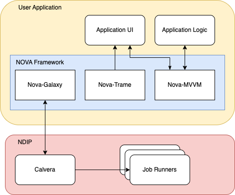
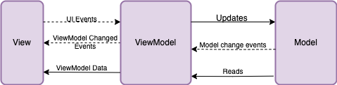

Content from Introduction to NOVA and NDIP
Last updated on 2025-10-10 | Edit this page
Estimated time: 20 minutes
Overview
Questions
- What is the Neutron Data Interpretation Platform (NDIP)?
- What is NOVA, and how does it simplify NDIP application development?
- What are the key components of NOVA, and what problems do they solve?
- How do NOVA libraries interact with the NDIP platform?
- What will I be able to do after completing this tutorial?
Objectives
- Understand the purpose of the NOVA tutorial and its goals.
- Explain the roles of NDIP and NOVA in neutron data analysis.
- Identify the core NOVA libraries and their functionalities.
- Describe the high-level architecture of a NOVA application interacting with NDIP.
Introduction to NOVA and NDIP
Welcome to the NOVA tutorial! This guide will walk you through the process of creating applications for the analysis and visualization of neutron scattering data using the NOVA framework. You will learn how to create scripts that interact with the existing tools deployed on the Neutrons Data Interpretation Platform (NDIP), and interactive web applications that can be deployed to NDIP to create simple user interfaces or complex visualizations. All these leverage the NOVA libraries to simplify interaction with the Neutron Data Interpretation Platform (NDIP).
What is NDIP?
NDIP is a workflow management system built on top of the Galaxy platform. It is designed to enable modular scientific workflows for the analysis and interpretation of neutron scattering data. NDIP provides a range of services including automated data ingestion, job submission, computational resource management, and visualization and analysis tools. The analysis of neutron scattering data often involves complex, multi-step workflows that include data reduction, correction, analysis algorithms, and visualization. NDIP streamlines these processes by providing a platform to manage and automate these workflows, ensuring reproducibility and efficiency.
What is NOVA?
NOVA is a framework that aims to simplify the development of applications that interact with NDIP. It consists of three core libraries:
nova-galaxy: This library simplifies interaction with the NDIP platform's APIs. It allows developers to easily connect to NDIP, submit jobs, handle parameters, and monitor job progress.nova-trame: This library facilitates the creation of interactive user interfaces using Trame, a powerful Python framework for building web-based GUIs and visualizations.nova-trameprovides a consistent look and feel for NOVA applications by simplifying interactions with Trame components (such as Vuetify).nova-mvvm: This library simplifies implementation of the Model-View-ViewModel (MVVM) design pattern. By utilizing this library, users can create structured applications that are more testable and easier to maintain.
NDIP and NOVA Together
To better understand how NOVA works with NDIP, consider this simplified architecture:

In essence, you will build your User Application using the NOVA Libraries, which in turn will interact with the NDIP Platform to perform neutron data analysis tasks. NOVA applications do not require a GUI to leverage NDIP. We'll demonstrate this in Episode 3, where we'll use ‘nova-galaxy’ to create a simple python script which connects to NDIP and launches a tool. In Episode 4, we'll extend that python script to include a simple GUI with the support of ‘nova-trame’ and ‘nova-mvvm’.
What Will You Learn?
In this tutorial, you will learn how to use these three core NOVA libraries to build a web-based user interface that allows you to:
- Connect to NDIP.
- Reference job definitions from tool XML files.
- Set parameters for those tools.
- Run the tools using the supplied parameters.
- Monitor the progress of the running tools.
- Obtain output from the tool when it completes.
- Create user interfaces to enable access to NDIP tools
- Add visualizations to the user interface
We'll be using example tools as a demonstration for this tutorial, however, the lessons learned here can be applied to a wide variety of neutron scattering data analysis applications. This hands-on tutorial will guide you through each step of the process, empowering you to build your own interactive tools.
Downloading the tutorial repository
The tutorial is hosted on the ORNL gitlab at https://code.ornl.gov/ndip/public-packages/nova-carpentry-tutorial. The simplest and recommended way to download the tutorial repository is by using git and the command:
It is also possible to download a zipped copy of the repository directly from the repository's gitlab web site.
Code Examples Directory
All of the code examples used in this tutorial are available in the
code directory of the tutorial repository. These examples
are built upon the template application that you will clone in the next
episode. The code is organized by episode, with each episode having its
own subdirectory (e.g., code/episode_2,
code/episode_3, etc.).
Each episode's subdirectory contains a complete, self-contained Python project that can be run independently using Poetry. This allows you to easily explore the code examples, run them, and modify them as you go through the tutorial.
Poetry is a tool for dependency management and packaging in Python. It allows you to declare the libraries your project depends on, and it will manage the installation and updating of those dependencies. Poetry also helps you create reproducible builds by locking the versions of your dependencies. It also makes it easier to publish and share your Python projects.
To run the code for a specific episode, navigate to the episode's directory in your terminal and use the following commands:
BASH
cd code/episode_X # Replace X with the episode number
poetry install # Install dependencies for this episode
poetry run app # Run the application for this episodeIf you are using the analysis cluster for the tutorial, then please
note that poetry run app will by default attempt to bind to
port 8080 and will fail if the port is already in use. This can happen
if others are on the same node as you running the same commands. If this
happens, you can change the port the application binds to with
poetry run app --port {myport}.
This structure ensures that each code example is isolated and runnable, making it easier for you to follow along with the tutorial and experiment with the code.
References
- Nova Documentation: https://nova-application-development.readthedocs.io/en/latest/
- nova-galaxy documentation: https://nova-application-development.readthedocs.io/projects/nova-galaxy/en/latest/
- nova-trame documentation: https://nova-application-development.readthedocs.io/projects/nova-trame/en/stable/
- nova-mvvm documentation: https://nova-application-development.readthedocs.io/projects/mvvm-lib/en/latest/
- Calvera documentation: https://calvera-test.ornl.gov/docs/
- NDIP is a workflow management system used for analsyis and interpretation of neutron scattering data.
- NDIP has a range of services and tools to enable the creation of complex workflows for data analysis.
- NOVA is a set of libraries that provide a framework to simplify the development of interactive applications for NDIP
Content from Getting Started with a Template Application
Last updated on 2025-10-10 | Edit this page
Estimated time: 18 minutes
Overview
Questions
- How do I quickly set up a starting point for a NOVA project?
- What files and directories are included in the NOVA template application?
- How does
poetrymanage project dependencies and virtual environments?
Objectives
- Clone the NOVA template application using
copier. - Understand the basic project structure created by the template.
- Identify key files in the project (e.g.,
pyproject.toml). - Install project dependencies using
poetry. - Deploy the template application to NDIP
Getting Started with a Template Application
As mentioned in the introduction, all code examples in this tutorial
are based on a template application. In this episode, we will create
this starting point by cloning a template using the copier
library. This template provides a basic project structure and
pre-configured files that will help us get started quickly with our NOVA
project, saving us from setting up everything from scratch.
The setup section detailed the prerequisites required for the tutorial. One of those prerequisites is copier which will be used to clone a template application. If you've not already insalled copier and other dependencies, please follow the instructions in the “Setup” section.
Cloning the Template
To clone the template application, run the following command:
BASH
copier copy https://code.ornl.gov/ndip/project-templates/nova-application-template.git nova_tutorialThis command will download the template to a directory called
nova_tutorial. Copier will prompt you with a series of
questions. Please answer the questions as follows:
What kind of application are you creating? > Enter
Tutorial-
What is your project name?
Enter
Nova Tutorial -
What is your Python package name (use Python naming conventions)?
Press enter to accept the default.
-
Do you want to install Mantid for your project?
Enter
no -
** Are you developing a GUI application using MVVM pattern?**
Enter
yes -
** Which library will you use?**
Select
Trame -
**Do you want a template with multiple tabs?
Enter
yes
After answering these questions, copier will clone the
template repository and create your project within the
nova_tutorial directory.
If your application requires Mantid, you can enter Yes and Mantid will be added to your dockerfile. However, for local development you will still need to properly set up your conda environment.
Install Project Dependencies
Clone the Template: Follow the instructions in the “Getting Started with a Template Application” section to clone the NOVA template using
copier. This will create a new directory (e.g.,nova_tutorial) containing your project files.-
Navigate to the Project Directory: Open your terminal and navigate to the newly created project directory:
-
Install Dependencies with Poetry: Use Poetry to install the project dependencies defined in the
pyproject.tomlfile:This command will create a virtual environment for your project and install all required libraries, including the NOVA libraries and Trame.
Project Structure
The template creates a basic project structure to help get you started quickly. It includes the following directories and files:
-
nova_tutorial/: The root directory of your project -
nova_tutorial/src/: Contains your application code -
nova_tutorial/src/nova_tutorial/: The name of your Python package -
nova_tutorial/tests/: Contains your application's unit tests. -
nova_tutorial/README.md: A readme file.
Note: The code provided in the
code/episode_2 directory represents a simplified version of
the template output, focused on the essential files for this tutorial.
The full template, as generated by copier, includes
additional configuration files (like Dockerfiles and CI setup) that are
not strictly necessary for following the tutorial's core concepts.
In the following sections, we will start adding code to this structure to build our NDIP job submission tool.
Updating the Template
After obtaining the template, you may need to update it. This is usually due to one of the following:
- You need to change an answer to a question asked during template setup.
- Our team has changed the template and you want to pull in the new content.
In both cases, you can update the template with:
copier will ask you the questions from the initial setup
again, and if you change your answers the template will be updated to
reflect your new answers. If you don’t need to change any answers, then
you can run the following to keep all of your existing answers:
copier uses git to resolve conflicts
between the template and your changes, so if you’ve heavily modified the
template after the initial setup then you may run into merge conflicts
during the update.
Run the Initial Tests
The template comes with a basic test suite using pytest.
Navigate to the nova_tutorial directory in your terminal
and run the tests using the command pytest. Examine the
output. Where are the tests located? What does a successful test look
like? Modify the test to intentionally fail. Observe the error message.
Remember to revert the changes so that the tests pass again..
-
Where are the tests located? The tests are
typically located in the
tests/directory, often mirroring the structure of thesrc/directory (e.g.,tests/nova_tutorial/test_module.py). -
What does a successful test look like? A successful
test will usually result in output from
pytestthat indicates all tests have passed (e.g., “100% passed”). There will be no error messages. The exact output varies slightly depending on the number of tests and the pytest configuration. -
Modify the test to intentionally fail: To make a
test fail, you can change an assertion to be incorrect. For example, if
a test asserts that
1 + 1 == 2, change it to1 + 1 == 3. -
Observe the error message: The error message will
indicate which assertion failed and provide information about the
expected and actual values. For example, you might see something like:
AssertionError: assert 2 == 3.
Explore Pre-Commit Hooks
The template includes pre-commit hooks for code formatting and linting.
-
Inspect the Configuration: Open the
.pre-commit-config.yamlfile. What tools are configured to run? What does each tool do (e.g.,black,flake8)? -
Try It Out: Make a deliberate formatting error in
one of the Python files (e.g., add extra spaces, make a line too long).
Now, run
pre-commit run. Observe how the pre-commit hooks automatically fix the formatting issues. Commit your changes. Pre-commit hooks can also be automatically run upon git commit.
-
What tools are configured to run? Open
.pre-commit-config.yamlto see the list. Common tools include:-
black: Auto-formats Python code to adhere to a consistent style. -
flake8: Lints Python code, checking for style errors and potential bugs. -
isort: Sorts Python imports alphabetically and separates them into sections. -
end-of-file-fixer: Ensures that files end with a newline. -
trailing-whitespace-fixer: Removes trailing whitespace from lines.
-
-
Observe how the pre-commit hooks automatically fix the
formatting issues: When you run
pre-commit run, the configured tools will automatically modify the files to correct formatting errors. The output will show which tools were run and which files were modified. You'll need togit addthe modified files before committing.
CI/CD Setup with GitLab CI
The template includes a basic GitLab CI configuration file
(.gitlab-ci.yml). While we won't fully execute a CI/CD
pipeline in this tutorial step, let's understand its purpose.
-
Examine the Configuration: Open the
.gitlab-ci.ymlfile. This file defines the pipeline. What are the key stages defined in the pipeline (e.g., build, test, deploy)? Identify the jobs that install dependencies, run tests, and perform linting. What triggers the pipeline to run (e.g., pushes, merge requests)? -
GitLab Runner: GitLab CI/CD uses runners
to execute the jobs defined in your
.gitlab-ci.ymlfile. These runners can be configured in various ways. (No action required; this is just an informational point.) - Discussion: If you were to push this project to a GitLab repository, what would happen when you create a merge request? How could you use CI/CD to automatically verify the code quality of your project? (No action required; this is a thought exercise.)
-
What are the key stages defined in the pipeline?
The stages typically include:
-
build: Installs dependencies and prepares the application for testing. -
test: Runs the unit tests. -
lint: Performs code linting and formatting checks. -
deploy(optional): Deploys the application to a server or environment.
-
-
Identify the jobs that install dependencies, run tests, and
perform linting: Look for job definitions that use commands
like
pip install,pytest, andflake8(or similar linting tools). -
What triggers the pipeline to run? The pipeline is
typically triggered by pushes to the repository and the creation of
merge requests. This is defined in the
.gitlab-ci.ymlfile using keywords likeon: [push, merge_requests]. -
If you were to push this project to a GitLab repository,
what would happen when you create a merge request? A pipeline
would be automatically triggered. The pipeline would run the jobs
defined in
.gitlab-ci.yml, such as installing dependencies, running tests, and performing linting. The results of the pipeline would be displayed in the merge request, allowing you to see if the code passes all checks before merging it. This helps ensure code quality and prevents broken code from being merged into the main branch.
Deploying Your Tool to NDIP
Now that we have our template application set up, we need to integrate it with the NDIP platform. The template includes built-in utilities to streamline this process, handling the GitLab repository setup and Galaxy tool XML management.
Initialize Your Project Repository
You can initialize your Git repository and push it to the correct location in the NDIP GitLab:
If prompted for a username and password by GitLab, then please use your three-character ID as the username and the Personal Access Token you set up earlier as the password.
This script will:
- Initialize a Git repository (if not already done)
- Set up the remote to point to the configured repository URL
- Add all project files to the repository
- Create an initial commit (if needed)
- Push the code to the GitLab repository
Continuous Integration and Container Building
Once your code is pushed to GitLab, the included CI/CD pipeline will
automatically build a Docker container for your application. The CI
configuration is already set up in the .gitlab-ci.yml file
and includes:
- Running tests to verify your code works correctly
- Building a Docker image containing your application
- Pushing the image to the Harbor container registry (at
savannah.ornl.gov/ndip/tool-sources/tutorial/YOUR_USERNAME-nova-tutorial)
The Docker image tag is derived from your project’s version in
pyproject.toml. Each time you update the version and push,
a new container will be built automatically.
Tool XML File
The template has already generated a Galaxy tool XML file for your project. You can find this file at:
xml/tool.xmlThis file defines how your tool appears and functions within the NDIP platform. It includes:
- A unique tool ID (now manually configured for the tutorial)
- The correct container reference pointing to your GitLab repository
- Command to run your application inside the container
- Help and description text for users
You will find a field called nova_category in the XML
file. This determines which category the tool will be placed in on https://nova.ornl.gov/. It
will be auto-populated by copier. If you want to manually edit it, the
available options can be found here: https://code.ornl.gov/ndip/project-templates/nova-application-template/-/blob/main/copier.yml?ref_type=heads#L35-44
After the manual changes we made in the previous step, your tool XML will be correctly configured for the tutorial environment.
Pushing the Tool XML to Galaxy Tools Repository
To deploy your tool to the NDIP platform, you need to add the XML file to the galaxy-tools repository. The template includes a utility for this:
This script will:
- Clone the Galaxy tools repository
- Copy your tool XML file to the correct location (for the tutorial
this is configured as
tools/neutrons/tutorials/YOUR_USERNAME-nova-tutorial.xml) - Commit the changes
- Push to the
prototypebranch of the galaxy-tools repository
Once your XML file is pushed to the prototype branch, an automated CI job will deploy your tool to the calvera-test instance. You can then access your tool through the NDIP web interface at https://calvera-test.ornl.gov.
The tool XML utility has been enhanced to check for the existence of your Docker image before proceeding with the push. This helps prevent deployment errors by ensuring your container has been built first.
Understanding Your Tool’s Integration
Let’s understand the key components that make your tool work in NDIP:
-
Repository Structure:
- Your code is hosted at
https://code.ornl.gov/ndip/tool-sources/tutorial/YOUR_USERNAME-nova-tutorial - The Docker container is built automatically by CI and stored at
savannah.ornl.gov/ndip/tool-sources/tutorial/YOUR_USERNAME-nova-tutorial
- Your code is hosted at
-
Tool XML File:
- Defines your tool for Galaxy/NDIP
- References your container so NDIP knows which image to run
- Configures the command to run your application
- Is stored on the prototype branch in the galaxy-tools repository at https://code.ornl.gov/ndip/galaxy-tools/-/tree/prototype/tools/neutrons/tutorials. The xml file will have a name in the format of YOUR_USERNAME-nova-tutorial.xml
-
Deployment Process:
- When you push code to your repository → CI builds a new container
- When you run
deploy-prototype→ The utility checks if your container exists and pushes your tool XML to the galaxy-tools prototype branch - After XML is merged → Your tool appears in the NDIP interface
In a production environment, when your tool is ready for users, you would run the deploy-production tool. This will create a merge request to the dev branch. The NDIP team reviews these changes, merges them, and your tool will be deployed to the production instance during the next deployment.
References
- Nova Documentation: https://nova-application-development.readthedocs.io/en/latest/
- nova-galaxy documentation: https://nova-application-development.readthedocs.io/projects/nova-galaxy/en/latest/
- nova-trame documentation: https://nova-application-development.readthedocs.io/projects/nova-trame/en/stable/
- nova-mvvm documentation: https://nova-application-development.readthedocs.io/projects/mvvm-lib/en/latest/
- Calvera documentation: https://calvera-test.ornl.gov/docs/
- Nova provides a template application to help get started developing your application.
- Use the copier tool to clone the template application.
- Poetry is a project management tool used to install dependencies and manage virtual environments.
- The template application includes everything you need to get started such as basic CI, dockerfile, and tests.
- Docker containers package your application and all its dependencies for deployment.
- Galaxy tool XML files define how your tool appears and functions in NDIP.
- Tools are deployed by adding their XML files to the galaxy-tools repository’s prototype branch.
Content from Programming with NDIP
Last updated on 2025-10-10 | Edit this page
Estimated time: 48 minutes
Overview
Questions
- How can I interact with the NDIP platform programmatically from Python?
- What is the
nova-galaxylibrary, and how does it simplify NDIP operations? - How do I define an NDIP tool and specify its input parameters using
nova-galaxy? - Where can I find information about what NDIP tool to use and parameters to set?
Objectives
- Explain the purpose of the
Connection,Outputs,Datastore,Tool, andParametersclasses innova-galaxy. - Describe the basic workflow for running an NDIP tool using
nova-galaxy. - Connect to NDIP using the
Connectionclass. - Define an NDIP tool and set its parameters using the
ToolandParametersclasses. - Run the tool and create a datastore.
Programming with NDIP
In this episode, we will start using the nova-galaxy
library to interact with the NDIP platform and run a neutron analysis
tool. First, ensure you have set your GALAXY_URL and
GALAXY_API_KEY as environment variables, as explained in
the Summary and Setup Episode. We also need to add
nova-galaxy as a project dependency.
From the command line, type
poetry add nova-galaxy@^0.7.0. This command will add the
nova-galaxy library to the pyproject.toml file as a project dependency.
Then run poetry install to update your project
dependencies.
The nova-galaxy library allows us to create powerful
python scripts which can leverage NDIP to run tools and workflows,
upload data, download results, and more. Although future episodes of
this tutorial largely focus on the creation of GUI applications, a GUI
is not required to create powerful applications backed by NDIP.
Interacting with NDIP via nova-galaxy
The nova-galaxy library is your gateway to interacting
with NDIP programmatically from Python. It provides a set of classes and
functions that simplify common NDIP operations, such as connecting to
the platform, running tools, and managing data.
We will be using the following key classes from
nova-galaxy in this episode:
-
Connection: The main entry point for interacting with NDIP. You instantiate theConnectionclass with your NDIP URL and API key to establish a connection. -
Tool: Represents a tool available on the NDIP platform. You can define aToolobject by its ID (which corresponds to a tool XML definition in NDIP). -
Parameters: Used to define the input parameters for a tool. You add parameters to aParametersobject, specifying the parameter names and values. -
Datastore: Configures Galaxy to group outputs of a tool to group outputs of a tool together. Should not directly instantiated. Instead use Connection.create_data_store() after starting a connection. -
Output: Contains the output datasets and collections for a tool. -
Dataset: A singular file which can be uploaded to Galaxy to be used in tools or downloaded from Galaxy to local storage. -
DatasetCollection: A group of files which can be uploaded to Galaxy to be used in tools or downloaded from Galaxy to local storage.
The basic workflow for running a tool with nova-galaxy
involves these steps:
-
Connect to NDIP: Create a
Connectioninstance with your credentials. -
Define the Tool: Create a
Toolinstance, specifying the ID of the NDIP tool you want to run. -
Set Parameters: Create a
Parametersinstance and add the necessary input parameters and their values for the tool. -
Run the Tool: Use the
tool.run()method to submit the job to NDIP. This typically involves creating a datastore to hold the job's input and output data.
Understanding an NDIP tool
NDIP tools consist of two parts. The first component is the core logic of the tool which will be containerized and run by NDIP. This is the component that we will be focusing on throughout the tutorial and containerization will be discussed in Episode 8. The second component is the tool's XML file which is added to the Galaxy Tool Repository. The XML file is responsible for describing the tool's inputs, outputs, location, how it is executed, and other details to NDIP.
Let's take a look key parts of the XML file for the Fractal Tool that we will use shortly.
The first line gives the name, version, and unique id for a tool. This ID is used in the example below to tell NDIP which tool we are attempting to use.
<tool id="neutrons_fractal" name="Fractals" version="0.2.0" python_template_version="3.5">This line tells NDIP where the tool's container can be found.
<container type="docker">savannah.ornl.gov/ndip/tool-sources/playground/fractal:0.1</container>This section defines the tool's inputs. In this example, the tool
requires an input by the name Option. The valid values for
Option are mandlebrot, julia,
random, and markus.
<inputs>
<param name="option" type="select" display="radio" label="Select Option">
<option value="mandelbrot" selected="true">Mandelbrot Set</option>
<option value="julia">Julia Set Animation</option>
<option value="random">Random Walk</option>
<option value="markus">Markus-Lyapunov Fractal</option>
</param>
</inputs>This section describes the output from the tool. The Fractal tool
results in a single output file named output. Tool outputs
will be discussed more below.
<outputs>
<data auto_format="true" name="output" label="$option">
</data>
</outputs>A comprehensive list of tools, and links to their XML, can be found in Calvera’s documentation on the tools page.
Setting up the Fractal tool
Let's create a Fractal class that uses
nova-galaxy to run the neutrons_fractal tool
on NDIP. You can find the complete code for this episode in the
code/episode_3 directory.
1. Fractal Class
(src/nova_tutorial/app/models/fractal.py)
(Create):
To get started, let's create the Fractal class. Create an empty file
at src/nova_tutorial/app/models/fractal.py. Add the
following pieces of code to the newly created file.
-
Imports: The
Fractal Classwill start by importing the necessary classes fromnova-galaxy:
-
__init__method: In the__init__method, we initialize theFractalclass. Note how we retrieveGALAXY_URLandGALAXY_API_KEYfrom environment variables. This establishes how we will connect to NDIP:
PYTHON
class Fractal:
def __init__(self):
self.fractal_type = "mandelbrot" # Default fractal type
self.galaxy_url = os.getenv("GALAXY_URL")
self.galaxy_key = os.getenv("GALAXY_API_KEY")-
run_fractal_toolmethod: This method encapsulates the logic for running thefractaltool. Let's examine the key steps within this method:-
Instantiate
Connection,Tool, andParameters: We create instances of theConnection,Tool, andParametersclasses:
-
Instantiate
PYTHON
def run_fractal_tool(self):
conn = Connection(galaxy_url=self.galaxy_url, galaxy_key=self.galaxy_key)
tool = Tool(id="neutrons_fractal")
params = Parameters()
params.add_input(name="option", value=self.fractal_type)Note that we create a Tool object with the
id="neutrons_fractal". This tells nova-galaxy
which NDIP tool we want to run. The obvious question at this point is
how do we know the id of the tool and what parameters it expects? We can
look at the tool's launch page in calvera for some hints but ultimately
we have to look at the tool's xml
file.
-
Connect and Run the Tool: The
with conn.connect() as galaxy_connection:block establishes a connection to NDIP and ensures proper handling of the connection:
PYTHON
with conn.connect() as galaxy_connection:
data_store = galaxy_connection.create_data_store(name="fractal_store")
data_store.persist()
print("Executing fractal tool. This might take a few minutes.")
output = tool.run(data_store, params)
output.get_dataset("output").download("tmp.png")
print("Fractal tool finished successfully.")The line data_store.persist() saves your datastore after
the “with” block is exited. Without calling this method, all tools,
running or finished, along with their results will be discarded after
the “with” block finishes execution.
2. main.py - Calling the Model
(src/nova_tutorial/app/main.py) (Modify):
We are now going to modify the existing main.py file.
Change the main method to match the code below.
-
Instantiate and Run: In the
main()function, we create an instance ofFractaland call therun_fractal_tool()method, wrapped in atry...exceptblock for basic error handling:
Running the tool
To run the code, use the following command in the top level of your
nova_tutorial project:
You should see Fractal tool finished successfully.
printed to the console.
Tool output
Tool execution often results in some type of output. In the Fractal
example, the tool output is a singular image file. A tool can have
multiple outputs and sometimes these outputs are grouped together in a
collection. In nova-galaxy, a singular file is called a
Dataset and a group of files is called a DatasetCollection. The
Dataset and DatasetCollection classes support
the following methods:
- upload(Datastore): Uploads the Dataset(DatasetCollection) to the specified Datastore on Galaxy.
- download(file_path): Downloads the Dataset(DatasetCollection) from Galaxy to the local path.
- get_content(): Retreives the content of the Dataset(DatasetCollection) without saving it to a local file path.
If a tool run results in a Dataset or
DatasetCollection, an Output is returned from
the run method. Output is an encapsulation of the output
datasets and collections from a Tool. A tool execution can result in
multiple Dataset and DatasetCollection,
therefore, these are all grouped in the Outputs class for
easier consumption.
In the Fractal example, the Tool.run command returns an instance of
the Output class which we save to the variable
output. The Fractal tool xml
file defines that successful execution of the tool will result in a
Dataset named output. This
Dataset is then downloaded to the local file path
image.png.
The Outputs can be used by the rest of your application, saved, or simply discarded. Outputs is also iterable, so you can use a for-loop to loop through all the contained datasets and collections. If your Datastore is persisted (using the persist() method), then a copy of the Datasets and DatasetCollections will reside on the NDIP platform, so it is not necessary to maintain a local copy.
Asynchronous tool execution
At times, it may be desirable to execute a tool or workflow without
waiting on the result. The class Tool method run has an optional
wait parameter. The default is true so that the tool is run
in a blocking manner. However, by setting the parameter to false, the
tool will be run asynchronously in a non-blocking manner. It is beyond
the scope of this episode, but if you were to attempt modify the example
to run the tool asynchronously, your code might look something like
this.
PYTHON
params1 = Parameters()
params1.add_input(name="option", "mandelbrot")
tool1.run(data_store, params1, wait=False)
params2 = Parameters()
params2.add_input(name="option", "julia")
tool2.run(data_store, params2, wait=False)
# wait on both tools to finish
while(!tool1.get_results() || !tool2.get_results())
await sleep(1)
# do stuffNote, when run in this manner, the output of tool.run() will be
None. In order to retrieve results, you can use
tool.get_results(). If the tool has not finished execution,
this will also return None. As soon as results are
available, the method will provide the results, exactly like the
blocking execution.
Next Steps
In this section, you learned how to use the nova-galaxy
library to run a tool on NDIP. In the next sections, we will expand on
this to create a full user interface to make this functionality
accessible to the end user.
Challenge
Run with Different Fractal Types Modify the
FractalViewModel class to default to a different fractal
type (e.g., “julia”). Run the application again and verify that it still
works.
The simplest way to accomplish this is to change the default for fractal type in the Fractal class. You can easily observe the change in galaxy.
Challenge
Introduce an Error Introduce an error into the code by changing the tool id to something different. What ouput do you see? What if you change the fractal_type to an invalid option such as mandel instead of mandelbrot?
In both cases, an error is received from the ndip-galaxy library.
When changing the tool id, a Tool not found error will be
returned. When selecting an invalid parameter, a
parameter 'option': an invalid option was selected error
will be returned.
References
- Nova Documentation: https://nova-application-development.readthedocs.io/en/latest/
- nova-galaxy documentation: https://nova-application-development.readthedocs.io/projects/nova-galaxy/en/latest/
- nova-trame documentation: https://nova-application-development.readthedocs.io/projects/nova-trame/en/stable/
- nova-mvvm documentation: https://nova-application-development.readthedocs.io/projects/mvvm-lib/en/latest/
- Calvera documentation: https://calvera-test.ornl.gov/docs/
- Nova-Galaxy can be used to create powerful python scripts which leverage the functionality of NDIP.
- Tools are run remotely on the NDIP platform
- Nova-Galaxy is used to connect to NDIP and run tools
- The fractal tool is started remotely and run on NDIP.
Content from User Interface Best Practices: The MVVM Design Pattern
Last updated on 2025-10-10 | Edit this page
Estimated time: 47 minutes
Overview
Questions
- What is the Model-View-ViewModel (MVVM) design pattern, and why is it useful for UI development?
- What are the roles and responsibilities of the Model, View, and ViewModel in the MVVM pattern?
- How does data binding work in MVVM, and why is it important?
- How does the
nova-mvvmlibrary simplify the implementation of the MVVM pattern in NOVA applications? - What is Pydantic, and how can it be used for data modeling and validation in the context of MVVM?
Objectives
- Define the Model-View-ViewModel (MVVM) design pattern and its benefits.
- Explain the responsibilities of each component in the MVVM pattern (Model, View, ViewModel).
- Describe the role of data binding in MVVM and how it enables reactive UIs.
- Explain the purpose of the
nova-mvvmlibrary and its key components (BindingInterface,TrameBinding,Communicator,new_bind). - Introduce Pydantic for data modeling and validation within the MVVM pattern.
- Understand how to implement MVVM using
nova-mvvmand Pydantic in a NOVA application.
User Interface Best Practices: The MVVM Design Pattern
In this section, we will introduce the Model-View-ViewModel (MVVM) design pattern, a powerful architectural approach for structuring applications, particularly those with user interfaces. We'll explore the core principles of MVVM, the roles of each component, and how the NOVA framework simplifies its implementation, making your code more organized, testable, and maintainable.
What is a Design Pattern?
Before diving into MVVM, it's helpful to understand what a design pattern is in software development. A design pattern is a reusable solution to a commonly occurring problem in software design. It's not a code snippet you can copy and paste, but rather a template or blueprint for how to structure your code to achieve a specific goal (e.g., separation of concerns, code reusability, testability).
The Model-View-ViewModel (MVVM) Pattern
MVVM is an architectural design pattern specifically designed for applications with user interfaces (UIs). It aims to separate the UI (the View) from the underlying data and logic (the Model) by introducing an intermediary component called the ViewModel. This separation makes the application more maintainable, testable, and easier to evolve.

The MVVM pattern consists of three core components:
-
Model: The Model represents the data and
the business logic of the application. It's responsible for:
- Data storage (e.g., reading from and writing to a database, a file, or an API).
- Data validation (ensuring the data is in a valid state).
- Business rules (the logic that governs how the data is manipulated and used).
The Model is agnostic to the UI. It doesn't know anything about how the data will be displayed or how the user will interact with it. It simply provides the data and the means to manipulate it.
-
View: The View is the user interface (UI)
of the application. It's responsible for:
- Displaying data to the user.
- Capturing user input (e.g., button clicks, text entered in a field, selections from a dropdown).
- Presenting the application's visual appearance.
The View is passive. It doesn't contain any business logic or data manipulation code. It simply displays the data provided to it and relays user actions to the ViewModel.
In our NOVA tutorial, the View will be built using Trame and Vuetify
components, leveraging the styling and structure provided by
nova-trame.
-
ViewModel: The ViewModel acts as an
intermediary between the Model and the View. It's responsible
for:
- Preparing data from the Model for display in the View. This might involve formatting the data, combining data from multiple sources, or creating derived data.
- Handling user actions from the View. This might involve validating user input, updating the Model, or triggering other actions in the application.
- Exposing data and commands to the View through data binding.
The ViewModel knows about the View and the data that the View needs, but it doesn't know about the specific UI components that are used to display the data. It also orchestrates the interaction between the View and the Model.
The ViewModel is where we'll use nova-mvvm to create
bindings between the ViewModel and the View, enabling the reactive
updates.
Why Use MVVM?
The MVVM pattern provides several benefits:
- Separation of Concerns: MVVM clearly separates the UI (View) from the application logic (Model) and the presentation logic (ViewModel). This makes the code more organized and easier to understand.
- Testability: Because the ViewModel is independent of the View, it can be easily unit-tested. You can test the presentation logic without needing to create a UI.
- Maintainability: Changes to the UI are less likely to affect the underlying application logic, and vice versa. This makes the application easier to maintain and evolve over time.
- Reusability: The ViewModel can be reused with different Views, allowing you to create different UIs for the same underlying data and logic.
- Team Collaboration: MVVM facilitates collaboration between developers and UI designers. Developers can focus on the Model and ViewModel, while designers can focus on the View, without interfering with each other's work.
Data Binding: The Heart of MVVM
Data binding is a mechanism that allows the View and the ViewModel to automatically synchronize their data. When the data in the ViewModel changes, the View is automatically updated to reflect the changes. Conversely, when the user interacts with the View (e.g., by entering text in a field), the data in the ViewModel is automatically updated.
This data binding is what makes MVVM so powerful and allows for reactive UIs. Instead of manually writing code to update the UI every time the data changes, you simply bind the UI components to the data in the ViewModel, and the updates happen automatically.
How NOVA Simplifies MVVM
The NOVA framework provides libraries and tools that simplify the implementation of the MVVM pattern:
-
nova-mvvm: This library provides a set of classes and functions that make it easier to create bindings between the ViewModel and the View. It handles the low-level details of data synchronization, allowing you to focus on the application logic. -
nova-trame: Provides a set of pre-built components and layouts that are designed to work seamlessly withnova-mvvm. This simplifies the creation of the View and ensures a consistent look and feel across NOVA applications. - Pydantic: While not strictly part of the MVVM pattern, Pydantic helps define the structure of your Model and ViewModel, making it easier to validate data and ensure data integrity.
Introduction to Pydantic for Data Modeling
Pydantic is a Python library that we will use to define data models and enforce data validation in our application. It uses Python type hints to define the structure of your data and automatically validates data against these types at runtime.
Benefits of Pydantic:
- Data Validation: Automatically validates data types and constraints, ensuring data integrity.
- Clear Data Structures: Defines data models in a clear and readable way using Python type hints.
- Serialization and Deserialization: Easily serializes data to and from standard formats like JSON.
- Improved Code Readability: Makes code easier to understand and maintain by explicitly defining data models.
Data Binding with NOVA
The nova-mvvm library greatly
simplifies the data synchronization between the components of an MVVM
application and provides support for user interfaces utilizing the
Trame, PyQt, and Panel graphical frameworks. The library provides
several predefined classes including TrameBinding, PyQtBinding, and
PanelBinding to connect UI components to model variables.
The rest of this tutorial focuses on building Trame GUI applications
using nova-trame and nova-mvvm. Therefore, we
will focus on the TrameBinding class, but all three function
similarly.
How to use TrameBinding
The initial step is to create a BindingInterface. A BindingInterface serves as the foundational layer for how connections are made between variables in the ViewModel and UI components in the View. Once a Trame application has started, the BindingInterface can be created in the View with:
After a BindingInterface has been created, variables must be added to
the interface via the interface's new_bind method. The
new_bind method expects a variable that will be linked to a
UI component, and an optional callback method. The callback method is
useful if there are actions to be performed after updates to the UI. In
the code snippet below, we’ve passed the Binding Interface to the
ViewModel. The ViewModel adds the model variable to the
binding interface. This new_bind method returns a
Communicator. The Communicator is an object
which manages the binding and will be used to propgate updates.
PYTHON
# Adding a binding to the Binding Interface, returns a Communicator
self.config_bind = bindingInterface.new_bind(self.model)The self.config_bind object is a
Communicator and is used to update the View. When the
ViewModel needs to tell the View to perform an Update, it calls the
update_in_view method of the Communicator. For
the self.config_bind object, the ViewModel would make a
call like below. It is common practice for the ViewModel to have a
method such as update_view, where ViewModel would update many objects.
However, there are also times when it is appropriate to only update a
singular object.
PYTHON
# Updating the UI connected to a binding.
def update_view(self) -> None:
self.config_bind.update_in_view(self.model)We've seen how to create a BindingInterface, add a new binding, and
how to perform updates. We also need to connect our View components to
the Communicators. The Communicator class has a connect
method. This method accepts a callable object or a string. If you pass a
callable object, such as a method, that object will be called whenever
the binding's update_in_view method is called. An example of this can be
seen when working with Plotly in Episode 7. In the example below, we
connect to the config_bind Communicator object that was
created in our ViewModel. When a string is passed to the connect method,
that string will be used as the unique name of our connector. In this
example, we pass in the string config but you are free to
use any string that is not already in use as a connector.
Finally, we connect a UI component to the connector object. The
template application uses the nova-trame library
which we'll work with in the next episode. For now, just note that
InputField is a UI components that is being connected to the binding in
our ViewModel
Project Structure
The template creates a well-organized project structure following best practices, including the Model-View-ViewModel (MVVM) design pattern. This structure promotes code maintainability, testability, and separation of concerns. Here’s a breakdown of the key directories and files:
nova_tutorial/: The root directory of your project. This is the top-level directory containing all project files and subdirectories.nova_tutorial/src/: This directory contains all the source code for your application. The separation intosrchelps distinguish your application code from configuration files, tests, and other project-related files that reside in the root.-
nova_tutorial/src/nova_tutorial/: This is the main Python package for your application. Its name (nova_tutorialin this case) is used when importing modules within your project. Inside this directory, you’ll find the core application logic, organized according to the MVVM pattern:-
nova_tutorial/src/nova_tutorial/app/: This directory contains the main application logic, further subdivided to reflect the MVVM structure.nova_tutorial/src/nova_tutorial/app/models/: (Model) This is where you define your data models and business logic. These classes represent the data your application works with and the rules for manipulating that data.nova_tutorial/src/nova_tutorial/app/view_models/: (ViewModel) This directory holds the ViewModels. These classes act as intermediaries between the Models and the Views. They prepare data for display and handle user interactions from the View.nova_tutorial/src/nova_tutorial/app/views/: (View) This directory contains the user interface (UI) components. These are built using Trame and Vuetify (vianova-trame). They are responsible for displaying data and capturing user input.nova_tutorial/src/nova_tutorial/app/main.py: The entry point for your NOVA application. This file initializes and starts the Trame server and theMainAppview.
-
nova_tutorial/tests/: Contains unit tests for your application. A well-structured project should include tests to ensure code quality and prevent regressions. The tests are typically organized to mirror the structure of your application code (e.g., tests for models, view models, and potentially UI components).nova_tutorial/README.md: A Markdown file providing a description of your project, instructions for setup and usage, and any other relevant information.pyproject.toml: A configuration file for Poetry, the dependency management and packaging tool used by NOVA. It specifies project dependencies, build settings, and other metadata.
Implementing MVVM with nova-mvvm and Pydantic
Let’s implement the MVVM pattern, starting with the UI and basic ViewModel connections, and then building up the Model functionality.
1. Initial Setup and ViewModel Basics
First, let’s simplify our main.py and set up the basic
structure of our UI and ViewModel interaction. We’ll create a button in
the UI that, when clicked, will eventually run our Fractal tool. For
now, it will just trigger a placeholder method in the ViewModel.
main.py- Simplifying the Application Entry Point (src/nova_tutorial/app/main.py) (Modify):
We’re removing the direct Fractal tool execution from
main(). The application will now solely focus on launching
the NOVA app.
PYTHON
import sys
def main() -> None:
kwargs = {}
from .views.main import MainApp
app = MainApp()
for arg in sys.argv[2:]:
try:
key, value = arg.split("=")
kwargs[key] = int(value)
except Exception:
pass
app.server.start(**kwargs)- Adding a Placeholder Method to the ViewModel
(
src/nova_tutorial/app/view_models/main.py) (Modify):
Add a run_fractal method to the
MainViewModel. For now, it just prints a message to the
console. This confirms that the button click is connected to the
ViewModel.
- Creating a FractalTab
(
src/nova_tutorial/app/views/fractal_tab.py) (Create):
This is the UI for our Fractal interaction. It includes a button that
calls the run_fractal method in the ViewModel. We don’t
have image display yet.
PYTHON
from trame.widgets import vuetify3 as vuetify
from nova.trame.view.components import InputField
from nova_tutorial.app.view_models.main import MainViewModel
class FractalTab:
def __init__(self, view_model: MainViewModel) -> None:
self.view_model = view_model
self.create_ui()
def create_ui(self) -> None:
vuetify.VBtn(
"Run Fractal",
click=self.view_model.run_fractal
)- Modify the tab panel
(
src/nova_tutorial/app/views/tabs_panel.py) (Modify):
Add the “Fractal” tab to the tab bar.
PYTHON
with vuetify.VTabs(v_model=("active_tab", 0), classes="pl-5"):
vuetify.VTab("Fractal", value=1) # Add Fractal Tab
vuetify.VTab("Sample Tab 1", value=2)
vuetify.VTab("Sample Tab 2", value=3)- Modify the tab panel content
(
src/nova_tutorial/app/views/tab_content_panel.py) (Modify):
Display the FractalTab content when the “Fractal” tab is
selected.
PYTHON
from .fractal_tab import FractalTab # Import the FractalTab
# ... (rest of the file) ...
with vuetify.VWindow(v_model="active_tab"):
with vuetify.VWindowItem(value=1):
FractalTab(self.view_model) # Add FractalTab
with vuetify.VWindowItem(value=2):
SampleTab1()
with vuetify.VWindowItem(value=3):
SampleTab2()Demonstration (Initial UI and ViewModel Connection):
Run the application: poetry run app
You should see a new “Fractal” tab in the application. Click the “Run
Fractal” button. You should see “run_fractal method called!” printed in
your terminal. This demonstrates that the button click in the View is
successfully triggering the run_fractal method in the
ViewModel, even though the method doesn’t do anything substantial yet.
This establishes the basic MVVM wiring.
2. Fractal Model and Pydantic Integration
Now, let’s build out the Fractal model using Pydantic
and integrate it into our MainModel.
Updating our Fractal Class for pydantaic and MVVM (
src/nova_tutorial/app/models/fractal.py) (Modify)Adding new imports: Add imports for Pydantic and base64 handling.
PYTHON
import os
from base64 import b64encode
from typing import Literal
from pydantic import BaseModel, Field
from nova.galaxy import Connection, Parameters, Tool-
Update class variables: Use Pydantic’s
Fieldfor type hinting and validation. Add theimage_datafield.
PYTHON
class Fractal(BaseModel):
fractal_type: Literal["mandelbrot", "julia", "random", "markus"] = Field(default="mandelbrot")
galaxy_url: str = Field(default_factory=lambda: os.getenv("GALAXY_URL"), description="NDIP Galaxy URL")
galaxy_key: str = Field(default_factory=lambda: os.getenv("GALAXY_API_KEY"), description="NDIP Galaxy API Key")
image_data: str = Field(default="", description="Base64 encoded PNG")
def set_fractal_type(self, fractal_type: str):
self.fractal_type = fractal_type- Decode the data: Update how the image is decoded.
PYTHON
output.get_dataset("output").download("tmp.png")
with open("tmp.png", "rb") as image_file:
self.image_data = f"data:image/png;base64,{b64encode(image_file.read()).decode()}"- Updating our MainModel Class to add the new Fractal Class
(
src/nova_tutorial/app/models/main_model.py) (Modify):
Import and include the Fractal model as a field in the
MainModel.
PYTHON
from .fractal import Fractal # Import Fractal
class MainModel(BaseModel):
# ... (other fields) ...
password: str = Field(default="test_password", title="User Password")
fractal: Fractal = Field(default_factory=Fractal) #Add Fractal Model- Connect the UI elements in FractalTab
(
src/nova_tutorial/app/views/fractal_tab.py) (Modify):
Update the create UI section to use InputField and the image.
PYTHON
from nova.trame.view.components import InputField
# ...(rest of file)...
def create_ui(self) -> None:
InputField(v_model="config.fractal.fractal_type")
vuetify.VBtn(
"Run Fractal",
click=self.view_model.run_fractal
)
vuetify.VImg(src=("config.fractal.image_data",), height="400", width="400")-
Add Full Functionality to the View Model
(
src/nova_tutorial/app/view_models/main.py) (Modify) Update the code in the run_fractal method.
Final Demonstration (Full Application):
Run the application: poetry run app
Now, when you click “Run Fractal,” the Fractal tool will execute in
Galaxy, and the resulting image will be displayed in the UI. You can
also change the fractal_type using the input field. This
demonstrates the complete MVVM flow, with data binding, Pydantic
validation, and the interaction between the View, ViewModel, and
Model.
If you don’t want Trame to launch a tab by default, you can instead
run poetry run app --server.
Pushing the Updated Tool to NDIP
Now that we have updated our Fractal tool and integrated it into the NOVA application using the MVVM pattern, the next step is to push these changes to NDIP. This step ensures that the tool on NDIP reflects the latest version of the tool and is available for others.
Here are the steps to push your changes and deploy the tool:
-
Bump the version: Open the
pyproject.tomlfile in the root of your project. Increment theversionnumber to0.2.0in the[tool.poetry]section. Save the file. -
Stage your changes: Use
git add .to stage all changes that have been made to the application. -
Commit your changes: Create a commit with a
descriptive message:
git commit -m "Update Fractal tool with MVVM, bump to version 0.2.0". -
Push to the repository: Push your committed changes
to the remote repository with
git push. - Wait for CI/CD: The push will trigger a CI/CD pipeline in gitlab. Wait for the pipeline to complete which includes building the container image for your tool. You can monitor the pipeline status in the Gitlab interface.
-
Deploy the tool: Once the pipeline is successful,
run the deployment command from your project’s root directory:
poetry run deploy-prototype.
This process ensures that your updated tool is built, containerized, and made available through NDIP.
Challenge
Trigger Pydantic Validation Error (Programmatic)
- In
Fractalinsrc/nova_tutorial/app/models/fractal.py, modify theset_fractal_typefunction from the previous exercise to use an invalid fractal type:
PYTHON
def set_fractal_type(self, fractal_type: str):
self.fractal_type = "bad_type" # Use the setter which includes validation
print("Attempted to set fractal type programmatically to:", new_type)
print("Current fractal type (after attempt):", self._fractal_type) # Print value after attempt
print("Current message:", self._message) # Print message- Run the application (
poetry run app). Observe the console output. Verify that: - The message “Attempted to set fractal type programmatically to: invalid-fractal-type” is printed.
- The “Current fractal type (after attempt):” is still “mandelbrot” indicating the invalid update was rejected.
- The “Current message:” now contains a “Validation Error” message from Pydantic.
Challenge
Inspect ViewModel State
- In
src/nova_tutorial/app/view_models/main.py, addprintstatements within theMainViewModel.__init__method to print the initial values ofself.fractal,self.fractal.galaxy_url, andself.fractal.fractal_type. - Run the application (
poetry run app). Observe the output in the console. Verify that the initial values are printed as expected. - Now, modify the
MainViewModel.__init__method to change the initial value ofself.fractal.fractal_typeto “julia”. Run the application again and confirm that the printed message has changed.
References
- Nova Documentation: https://nova-application-development.readthedocs.io/en/latest/
- nova-galaxy documentation: https://nova-application-development.readthedocs.io/projects/nova-galaxy/en/latest/
- nova-trame documentation: https://nova-application-development.readthedocs.io/projects/nova-trame/en/stable/
- nova-mvvm documentation: https://nova-application-development.readthedocs.io/projects/mvvm-lib/en/latest/
- Calvera documentation: https://calvera-test.ornl.gov/docs/
- MVVM stands for Model, View, View-Model.
- MVVM is a design pattern which provides best practices for UI development.
- MVVM helps developers create maintainable, testable, and reusable code.
- The foundation of MVVM is a separation of logic between the UI (view), and the business logic (model) of the application.
- The View-Model component serves as an intermediary between the Model and the View.
- Pydantic is frequently used to validate inputs into our models.
- Bindings are used to synchronize data between the view and view-model.
Content from Web-based User Interface Development
Last updated on 2025-10-10 | Edit this page
Estimated time: 38 minutes
Overview
Questions
- What is Trame, and why should I use it for building UIs in NOVA?
- How does
nova-tramemake Trame development easier? - What are the key advantages of using a declarative UI approach with Trame?
- How can I create a basic UI layout using
nova-tramecomponents? - How can I add common Vuetify components (e.g.,
VTextField,VCheckbox,VSlider) to my Trame application? - How can I customize the appearance of Vuetify components?
- Where can I find more information about available Vuetify components?
Objectives
- Explain the purpose of Trame as a UI framework.
- Describe how
nova-tramesimplifies Trame development in NOVA applications. - Identify key features and benefits of using Trame.
- Use
nova-tramecomponents to build a basic user interface. - Incorporate common Vuetify components into a Trame application.
- Explore the Vuetify component library and identify components suitable for scientific applications.
- Add custom UI components, and tailor their appearance with attributes.
Web-based User Interface Development
In this section, we will dive into Trame and the
nova-trame library to build interactive web-based user
interfaces for our NOVA applications. We'll explore how
nova-trame simplifies UI development within the NOVA
ecosystem and how to use common layout components.
Introduction to Trame
Trame is a powerful Python framework for building interactive web applications and visualizations. It lets you create UIs declaratively using Python, eliminating the need for complex JavaScript and front-end web development. Trame handles the complexities of creating a dynamic web application, allowing you to focus on your application's logic.
Key Features and Benefits of Trame:
- Declarative UI: Define your user interfaces using Python code. You describe what the UI should be, not how to implement it using web technologies. This significantly simplifies UI development.
- Interactive Applications: Create dynamic UIs with real-time updates using Trame's data binding capabilities. Changes in your ViewModel automatically reflect in the UI, and user interactions in the UI can update the ViewModel.
- Web-Based and Accessible: Trame applications are standard web applications, accessible from any modern web browser. This makes them easy to deploy and share with colleagues and users.
- Extensible and Rich UI Components: Trame leverages libraries like Vuetify, providing a wide range of pre-built, visually appealing, and interactive UI components. Vuetify follows the Material Design specification, ensuring a modern and consistent look and feel.
- Python-Centric Development: Build complex web applications and perform computations using Python, without needing extensive front-end web development knowledge. This allows you to leverage your existing Python skills.
Introducing nova-trame
nova-trame simplifies the process of creating consistent
and easy-to-use Trame applications within the NOVA framework. It builds
upon the core Trame framework by providing pre-built components,
layouts, themes, and utilities tailored for the NOVA ecosystem.
Benefits of using nova-trame:
-
Simplified UI Development: Reduces the boilerplate
code required to create a Trame application.
nova-trameprovides abstractions and helpers that streamline common UI tasks. - Consistent Look and Feel: Ensures all NOVA applications have a consistent look and feel by applying a common theme and style based on the NOVA design guidelines. This helps users easily recognize and use NOVA applications.
- Reusable UI Components: Makes it easy to use reusable UI components within your application. You can create custom components and share them across multiple NOVA applications.
-
Integration with MVVM:
nova-trameworks seamlessly with thenova-mvvmlibrary to implement the MVVM architecture. This simplifies the process of connecting your UI to your application logic.
Key nova-trame Components
nova-trame provides several key components that simplify
UI development. Here are some of the most important:
-
Layout & Theme Management
(
ThemedApp):nova-trameprovides a default layout and theme that will give your application a consistent look and feel to other NOVA applications. If needed, you can still customize or override the defaults. -
InputField: This component simplifies the creation of various input fields (text fields, dropdowns, checkboxes, etc.). It automatically integrates with Pydantic models to load labels, hints, and validation rules, reducing the amount of code you need to write. It also supports debouncing and throttling for improved performance. -
RemoteFileInput: This component allows you to browse the filesystem that the application is running on and select a file from it. This must be used carefully but can provide you with a simple way to connect to remote filesystems (e.g. the analysis cluster filesystem for HFIR and SNS). -
Layout Components:
nova-trameprovides layout components that help you structure your UI. These components are based on CSS Flexbox and Grid layouts, making it easy to create responsive and visually appealing UIs. The main layout components include:-
GridLayout: Creates a grid with a specified number of columns. You can useGridLayoutto arrange your UI elements in a structured grid layout. -
VBoxLayout: Creates an element that vertically stacks its children. UseVBoxLayoutto arrange UI elements in a vertical column. -
HBoxLayout: Creates an element that horizontally stacks its children. UseHBoxLayoutto arrange UI elements in a horizontal row.
-
Let's explore these components in more detail:
Layout & Theme Management (ThemedApp)
Layouts are responsible for arraging your content in a consistent manner. In Trame, a layout consists of multiple “slots”. A slot is a section of the page to which you can add content.
nova-trame provides a basic layout and theme that you
can access via the ThemedApp class. The template app will
setup your main view class to inherit from ThemedApp
already, but to see how it works let's try moving the button to run the
fractal tool from the fractal tab into post_content slot in
the layout.
1. src/nova_tutorial/app/views/main.py
(Modify):
PYTHON
import logging
from nova.mvvm.trame_binding import TrameBinding
from nova.trame import ThemedApp
from nova.trame.view import layouts
from trame.app import get_server
from trame.widgets import vuetify3 as vuetify
from ..mvvm_factory import create_viewmodels
from ..view_models.main import MainViewModel
from .tab_content_panel import TabContentPanel
from .tabs_panel import TabsPanel
logger = logging.getLogger(__name__)
logger.setLevel(logging.INFO)
class MainApp(ThemedApp):
"""Main application view class. Calls rendering of nested UI elements."""
def __init__(self) -> None:
super().__init__()
self.server = get_server(None, client_type="vue3")
binding = TrameBinding(self.server.state)
self.view_models = create_viewmodels(binding)
self.view_model: MainViewModel = self.view_models["main"]
self.create_ui()
def create_ui(self) -> None:
self.state.trame__title = "Fractal Tool GUI"
with super().create_ui() as layout:
layout.toolbar_title.set_text("Fractal Tool GUI")
with layout.pre_content:
TabsPanel(self.view_models["main"])
with layout.content:
TabContentPanel(
self.server,
self.view_models["main"],
)
with layout.post_content:
vuetify.VBtn(
"Run Fractal",
click=self.view_model.run_fractal # calls the run_fractal_tool method
)
return layout2. src/nova_tutorial/app/views/fractal_tab.py
(Modify):
PYTHON
def create_ui(self) -> None:
InputField(v_model="config.fractal.fractal_type")
vuetify.VImg(src=("config.fractal.image_data",), height="400", width="400")ThemedApp.create_ui will return the layout object, so be
careful not to modify the super().create_ui() call.
The with syntax is used by Trame to add content to a
slot. This allows your view to be defined in a hierarchical way similar
to writing HTML.
Here is a layout diagram showing all of the available slots in
ThemedApp:

nova-trame slot diagram for its
default layoutFor a detailed discussion of how to work with these slots, please
review the nova-trame
documentation. This documentation also shows you how to customize
the theme provided by nova-trame and how to perform common
UI tasks such as managing the spacing between elements.
InputField
The InputField component simplifies creating different
types of input fields in your UI. It can create text fields, dropdowns
(select), checkboxes, and more, all with a consistent look and feel. A
key advantage of InputField is its automatic integration
with Pydantic models. If the v_model references a Pydantic
model field, InputField can automatically:
-
Load the label: Use the
titleattribute from the Pydantic field as the input field's label. -
Display a hint: Use the
descriptionattribute from the Pydantic field as a help text or hint for the input field. - Apply validation rules: Automatically generate validation rules based on the Pydantic field's type and constraints.
This integration significantly reduces the amount of boilerplate code you need to write for input fields.
The InputField also provides debouncing and throttling
features that can improve application performance. These features are
useful when dealing with user input that triggers frequent updates to
the Trame state.
Let's change the fractal type field to a dropdown and add a label to it.
3. src/nova_tutorial/app/models/fractal.py
(Modify):
PYTHON
from enum import Enum
class FractalTypeOptions(str, Enum):
mandelbrot = "mandelbrot"
julia = "julia"
random = "random"
markus = "markus"
class Fractal(BaseModel):
fractal_type: FractalTypeOptions = Field(default=FractalTypeOptions.mandelbrot)4. src/nova_tutorial/app/views/fractal_tab.py
(Modify):
RemoteFileInput
The RemoteFileInput component allows you to quickly
create a widget for the user to find and select files from the computer
running your application. This can be powerful if you want to connect
your application to the SNS analysis cluster filesystem, for example, as
you could use RemoteFileInput(base_paths=["/HFIR", "/SNS"])
to expose relevant experiment data to users.
5. src/nova_tutorial/app/views/sample_tab_1.py
(Modify):
PYTHON
from nova.trame.view.components import InputField, RemoteFileInput
class SampleTab1:
"""Sample tab 1 view class. Renders text input for username."""
def __init__(self) -> None:
self.create_ui()
def create_ui(self) -> None:
RemoteFileInput(v_model="config.file", base_paths=["/HFIR", "/SNS"])
InputField(v_model="config.username")6. src/nova_tutorial/app/models/main_model.py
(Modify):
Add a file field to the MainModel to store
the selected file path. We use Optional[str] because
initially, no file will be selected.
PYTHON
from pydantic import BaseModel, Field
from .fractal import Fractal
class MainModel(BaseModel):
username: str = Field(
default="test_name",
min_length=1,
title="User Name",
description="Please provide the name of the user",
examples=["user"],
)
password: str = Field(default="test_password", title="User Password")
file: str = Field(default="", title="Select a File")
fractal: Fractal = Field(default_factory=Fractal)If you want to connect your application to the analysis cluster, then it will need to be run on a computer where the filesystem is mounted. If your application is deployed through our platform, then we can ensure that your application runs in the correct environment to support your needs.
When using RemoteFileInput, please ensure that the
base_paths parameter only contains paths that you are ok
with the user seeing.
After the user selects a file, the v_model will store a
path to the file.
Layout Components: GridLayout, VBoxLayout,
and HBoxLayout
nova-trame provides several layout components that make
it easy to structure your UI:
-
GridLayout: Creates a grid layout with a specified number of columns. This is useful for arranging UI elements in a structured grid. You can use therow_spanandcolumn_spanattributes to control how many rows and columns each element spans.
PYTHON
from nova.trame.view import layouts
from trame.widgets import vuetify3 as vuetify
with layouts.GridLayout(columns=2):
vuetify.VTextField(label="First Name")
vuetify.VTextField(label="Last Name")
vuetify.VTextField(label="Email")
vuetify.VTextField(label="Phone Number")This code creates a grid with two columns and arranges the text fields in the grid.
-
VBoxLayout: Creates a vertical box layout, stacking its children vertically. This is useful for creating simple vertical layouts.
PYTHON
from nova.trame.view import layouts
from trame.widgets import vuetify3 as vuetify
with layouts.VBoxLayout():
vuetify.VTextField(label="Address Line 1")
vuetify.VTextField(label="Address Line 2")
vuetify.VTextField(label="City")This code creates a vertical layout and stacks the text fields vertically.
-
HBoxLayout: Creates a horizontal box layout, stacking its children horizontally. This is useful for creating simple horizontal layouts.
PYTHON
from nova.trame.view import layouts
from trame.widgets import vuetify3 as vuetify
with layouts.HBoxLayout():
vuetify.VTextField(label="First Name")
vuetify.VTextField(label="Last Name")This code creates a horizontal layout and stacks the text fields horizontally.
By combining these layout components, you can create complex and responsive UI layouts.
As an example, we can use the layout classes to center the “Run Fractal” button.
7. src/nova_tutorial/app/views/main.py
(Modify):
PYTHON
from nova.trame.view import layouts
...
with layout.post_content:
with layouts.HBoxLayout(classes="my-2", halign="center"):
vuetify.VBtn(
"Run Fractal",
click=self.view_model.run_fractal # calls the run_fractal_tool method
)In the above example, we use the classes parameter to
HBoxLayout to add the my-2 CSS class to the
element. This parameter can be used on any Trame component to customize
your interface’s appearance without having to write CSS.
The my-2 class is provided by Vuetify and gives the element vertical
margin (space above and below the element). https://vuetifyjs.com/en/styles/spacing documents this
class and other classes related to spacing. There are also many other
pages on the Vuetify docs describing classes that together give you a
wide range of options for customizing your interface.
For a more detailed explanation of how to work with our layout and
theme, please refer to the nova-trame documentation.
Running the application
To run the code, use the following command in the top level of your
nova_tutorial project:
You should now see the simple UI. When you click the “Sample Tab 1” and “Sample Tab 2” tabs, you should now see the updated content with the new UI components.
Advanced Topics (Asynchronicity & Conditional Rendering)
Now that we understand the basics of working with Trame, let's make the view for the fractal tab a bit more intuitive for the user by giving them a visual indicator that the job is running.
7. src/nova_tutorial/app/views/fractal_tab.py
(Modify):
PYTHON
def __init__(self, view_model: MainViewModel) -> None:
self.view_model = view_model
self.view_model.running_bind.connect("running")
self.create_ui()
def create_ui(self) -> None:
InputField(v_model="config.fractal.fractal_type", classes="mb-2", type="select")
vuetify.VProgressCircular(v_if="running", indeterminate=True)
vuetify.VImg(v_else=True, src=("config.fractal.image_data",), height="400", width="400")We will need to add a data binding for running, as well.
We choose to place this directly in the view model as this is not
relevant to running the fractal tool on NDIP.
8. src/nova_tutorial/app/view_models/main.py
(Modify):
PYTHON
from asyncio import create_task, sleep
from threading import Thread
# ... (rest of the file) ...
def __init__(self, model: MainModel, binding: BindingInterface):
self.model = model
self.running = False
# here we create a bind that connects ViewModel with View. It returns a communicator object,
# that allows to update View from ViewModel (by calling update_view).
# self.model will be updated automatically on changes of connected fields in View,
# but one also can provide a callback function if they want to react to those events
# and/or process errors.
self.config_bind = binding.new_bind(self.model, callback_after_update=self.change_callback)
self.running_bind = binding.new_bind()
def update_view(self) -> None:
self.config_bind.update_in_view(self.model)
self.running_bind.update_in_view(self.running)Finally, we manipulate our new view state based on the current status of the tool. Because the fractal tool takes a long time to complete, we offload it to a background thread. If we do not do this, then Trame will not update the view until the tool has finished running, which defeats the purpose of this change.
PYTHON
def run_fractal(self) -> None:
self.running = True
self.update_view()
# update_view won't take effect until this method returns a value, so we must offload this long-running task to
# a background thread for our conditional rendering to work.
fractal_tool_thread = Thread(target=self.run_fractal_in_background, daemon=True)
fractal_tool_thread.start()
# We also need to know when the tool is done running so that we can
create_task(self.monitor_fractal())
def run_fractal_in_background(self) -> None:
self.model.fractal.run_fractal_tool()
self.running = False
async def monitor_fractal(self) -> None:
while self.running:
await sleep(0.1)
self.update_view()With any Trame or nova-trame component, you can use the
v_if, v_else_if, and v_else
arguments to only show the component in the interface when a condition
is true. The condition can be a reference to your model, similar to the
v_model argument, or it can be a full JavaScript expression
for complex use cases.
One major caveat when working with Trame is that Trame itself runs in the main thread of your application. Since Trame is responsible for syncing state between the server and the user interface, if you run a long, CPU-bound task in the main thread then Trame will freeze and your user interface will likely crash. If you need to run a long job (for example, a Mantid command that takes several minutes), then it is your responsibility to ensure that the task is run in a separate thread.
Challenge
Explore the InputField Component Modify
the InputField component in SampleTab1 to
automatically retrieve the label, hint, and validation rules from a
Pydantic model field. Create a simple Pydantic model with a
username field with a title,
description, and min_length constraint.
Challenge
Create a Complex Layout Combine
GridLayout, VBoxLayout, and
HBoxLayout components to create a more complex UI layout in
SampleTab2. Try creating a layout with a header, a sidebar,
and a main content area.
Challenge
Customize Component Appearance Experiment with customizing the appearance of the Vuetify components using the various props and styles available. Try changing the color, size, font, and other visual attributes of the components. Refer to Vuetify's component documentation for details.
References
- Nova Documentation: https://nova-application-development.readthedocs.io/en/latest/
- nova-galaxy documentation: https://nova-application-development.readthedocs.io/projects/nova-galaxy/en/latest/
- nova-trame documentation: https://nova-application-development.readthedocs.io/projects/nova-trame/en/stable/
- nova-mvvm documentation: https://nova-application-development.readthedocs.io/projects/mvvm-lib/en/latest/
- Vuetify Documentation: https://vuetifyjs.com/en/
- Calvera documentation: https://calvera-test.ornl.gov/docs/
```
- Trame is a powerful python UI framework which lets users create a UI declaratively.
- Nova-Trame is a library which eases the development of UI applications for NOVA.
- Nova-Trame provides key components, such as, InputField and GridLayout to greatly simplify the creation of a functional UI.
Content from Advanced Data Validation with Pydantic
Last updated on 2025-10-10 | Edit this page
Estimated time: 60 minutes
Overview
Questions
- Why is data validation important?
- What is Pydantic and how it works?
- How can I represent complex data structures with nested relationships using Pydantic?
- How can I enforce validation rules that go beyond basic type checking using Pydantic?
- How do I use Pydantic models in NOVA framework?
Objectives
- Represent data model using Pydantic library.
- Define nested Pydantic models to represent complex data structures.
- Implement custom validation logic for a single field.
- Implement custom validation logic for the whole model.
- Use Pydantic models in NOVA framework.
Advanced Data Validation with Pydantic: Ensuring Data Integrity
In this section, we will explore Pydantic, a powerful Python library for data validation and settings management. We'll delve into the benefits of data validation, how Pydantic works, and best practices for using it effectively within the NOVA framework and the MVVM architecture.
The complete code for this episode is available in the
code/episode_6 directory.
Why Data Validation Matters
Data validation is the process of ensuring that data meets certain criteria before it's processed by your application. It's a crucial step in building robust and reliable software. Without proper data validation, your application could be vulnerable to:
- Unexpected Errors: Invalid data can cause your application to crash or produce incorrect results.
- Security Vulnerabilities: Malicious users can exploit the lack of data validation to inject harmful data into your application, leading to security breaches.
- Data Corruption: Invalid data can corrupt your data stores, leading to data loss or inconsistency.
- Integration Issues: When interacting with external systems or APIs, data validation ensures that your data conforms to the expected format and constraints.
Data validation helps you:
- Improve Data Quality: By enforcing data constraints, you ensure that your application works with clean and consistent data.
- Enhance Application Reliability: By preventing invalid data from being processed, you reduce the risk of errors and crashes.
- Strengthen Security: By sanitizing user input and validating data from external sources, you protect your application from security threats.
Introduction to Pydantic
Pydantic is a Python library that provides a powerful and elegant way to define data models and enforce data validation. It uses Python type hints to define the structure of your data and automatically validates data against these types at runtime.
Key Features of Pydantic:
- Data Validation: Automatically validates data types and constraints, ensuring data integrity. Pydantic supports a wide range of validation options, including type checking, length constraints, regular expressions, custom validators, and more.
- Clear Data Structures: Defines data models in a clear and readable way using Python type hints. Pydantic models are easy to understand and maintain.
- Serialization and Deserialization: Easily serializes data to and from standard formats like JSON. This is useful for interacting with APIs and other external systems.
- Settings Management: Can be used to manage application settings and configuration, providing a centralized and type-safe way to access configuration values.
- Improved Code Readability: Makes code easier to understand and maintain by explicitly defining data models. Type hints make it clear what type of data is expected for each field.
Create a new CLI project
Let's start by setting up a new application from the template.
To clone the template application, run the following command:
BASH
copier copy https://code.ornl.gov/ndip/project-templates/nova-application-template.git advanced_pydanticThis command will download the template to a directory called
advanced_pydantic. Copier will prompt you with a series of
questions. Please answer the questions as follows:
What kind of application are you creating? > Enter
Command-Line Tool-
What is your project name?
Enter
Advanced Pydantic -
All other questions
Press enter to accept the default.
After that, go into the created folder and install project dependencies:
How Pydantic Works
Pydantic uses Python type hints to define data models. When you create an instance of a Pydantic model, Pydantic automatically validates the input data against the defined types and constraints.
- Create a User Model (
src/advanced_pydantic/main.py) (Modify):
PYTHON
from pydantic import BaseModel, Field
class User(BaseModel):
id: int = Field(default=1, gt=0) # id must be an integer greater than 0
name: str = Field(default="someName", min_length=1) # name must be a string with at least one characterIn this example, we define a User model with two fields:
id and name. We use type hints to specify the
data type for each field (e.g., int, str) and
Field with validation arguments to specify additional
constraints (e.g., gt=0, min_length=1, …).
When you create an instance of the User model, Pydantic
automatically validates the input data.
- Create an instance of a User
(
src/advanced_pydantic/main.py) (Modify):
PYTHON
from pydantic import ValidationError
def main() -> None:
try:
user = User(id=0, name="")
print(user)
except ValidationError as e:
print(e)and run it with
If the input data is invalid, Pydantic raises a
ValidationError exception with detailed information about
the validation errors.
Using Pydantic to represent more complex data structures
When working with structured data, it's common to have nested objects. For example, a User model from the above example might have multiple Address entries. In Pydantic, we can achieve this by creating nested models.
- Creating the Address Model
(
src/advanced_pydantic/main.py) (Modify).
The Address model represents a simple address with three fields:
- street: A string with a minimum length of 3 and a maximum of 50.
- city: A string with a minimum length of 2 and a maximum of 30.
- zip_code: A string that must match a 5-digit ZIP code format.
- type: A string that must be “home” or “work”.
PYTHON
from typing import Literal
from pydantic import BaseModel, Field
class Address(BaseModel):
street: str = Field(min_length=3, max_length=50)
city: str = Field(min_length=2, max_length=30)
zip_code: str = Field(pattern=r"^\d{5}$") # US ZIP code validation
type: Literal["home", "work"] = Field()- Using the Address Model as a Nested Field
(
src/advanced_pydantic/main.py) (Modify).
Update the User model so that it now contains:
- id: An integer that must be greater than 0 (default is 1).
- name: A required string with at least 1 character (default is “someName”).
- addresses: A list of Address models, requiring at least one address.
PYTHON
from typing import List
class User(BaseModel):
id: int = Field(default=1, gt=0)
name: str = Field(default="someName", min_length=1)
addresses: List[Address] = Field(min_length=1)- Test the model (
src/advanced_pydantic/main.py) (Modify).
PYTHON
def main() -> None:
# Example input
user_data = {
"id": 1,
"name": "Alice",
"addresses": [{
"street": "123 Main St",
"city": "New York",
"zip_code": "10001",
"type": "home"
}]
}
user = User.model_validate(user_data)
print(user)and run it with
For easier integration with the NOVA framework, where model field information is used for displaying and validating GUI elements, we recommend avoiding overly complex nested structures. In particular, lists of lists are currently not supported.
Implement custom validation logic for a single field
Sometimes, simple validation like checking the minimum length is not enough. In such cases, you can write a custom validation function for a specific field.
For example, let's say we have a User model where only even IDs are
allowed. We can enforce this constraint using the
@field_validator decorator.
- Using the
@field_validator decorator(src/advanced_pydantic/main.py) (Modify):
PYTHON
from pydantic import BaseModel, Field, field_validator
class User(BaseModel):
id: int = Field(default=1, gt=0)
name: str = Field(default="someName", min_length=1)
@field_validator("id", mode="after")
@classmethod
def is_even(cls, value: int) -> int:
if value % 2 == 1:
raise ValueError(f"{value} is not an even number")
return value
def main() -> None:
# Example input
user_data = {
"id": 1,
"name": "Alice",
}
user = User.model_validate(user_data)
print(user)This code will raise a ValueError because the provided id (1) is not an even number.
Note that we used the mode=“after” option for the validator. This ensures that our custom validation runs after Pydantic's internal validation (in our example example, checking that the id is an integer and greater than 0). Alternatively, you can use mode=“before”, where custom validation occurs before the internal validation. Validators in the after mode are generally more type-safe, making them easier to implement.
Implement custom validation logic for the whole model
In some cases, you may need to validate the entire model, not just
individual fields. This can be done by writing a custom validation
function for the whole model using the @model_validator
decorator.
For example, let's say we have a User model where the name and id must meet specific conditions together. For instance, we only allow users with even IDs to have names that start with a capital letter. We can enforce this logic using a @model_validator.
- Using the
@model_validator decorator(src/advanced_pydantic/main.py) (Modify):
PYTHON
from pydantic import BaseModel, Field, model_validator
from typing_extensions import Self
class User(BaseModel):
id: int = Field(default=1, gt=0)
name: str = Field(default="someName", min_length=1)
@model_validator(mode='after')
def check_name_for_even_id(self) -> Self:
if self.id % 2 == 0 and not self.name[0].isupper():
raise ValueError(f"Name must start with a capital letter when the ID is even.")
return self
def main() -> None:
# Example input
user_data = {
"id": 2,
"name": "alice", # Name starts with lowercase, should raise an error
}
user = User.model_validate(user_data)
print(user)This code will raise a ValueError because the name (“alice”) does not start with a capital letter, while the id is even.
Create a simple Trame application
Now, let's create a simple Trame-based GUI application.
To clone the template application, run the following command:
BASH
copier copy https://code.ornl.gov/ndip/project-templates/nova-application-template.git pydantic_mvvmThis command will download the template to a directory called
pydantic_mvvm. Copier will prompt you with a series of
questions. Please answer the questions as follows:
What kind of application are you creating? > Enter
Nova Application-
What is your project name?
Enter
Trame with Pydantic -
What is your Python package name (use Python naming conventions)?
Press enter to accept the default.
-
Do you want to install Mantid for your project?
Enter
n -
Are you developing a GUI application using MVVM pattern?
Enter
y -
Which library will you use?
Select
Trame -
Do you want a template with multiple tabs?
Enter
n
After that, go into the created folder and install project dependencies:
Using Pydantic models in NOVA framework
One of the great features of the NOVA Framework is that it allows an application to leverage Pydantic models to automatically validate UI elements. Let's walk through what that looks like in code.
- First, let's add the following Model
(
src/trame_with_pydantic/app/models/settings.py) (Create):
PYTHON
from pydantic import BaseModel, Field
class SettingsModel(BaseModel):
port: int = Field(default=8080, gt=0, lt=65536, title="Port Number", description="The port to listen on.", examples=["12345"])- Create a binding for the model
(
src/trame_with_pydantic/app/view_models/main.py) (Modify):
In your ViewModel, create a binding for this Model and clean up the code created by the template engine, we don’t need it for this example):
PYTHON
from typing import Any, Dict
from nova.mvvm.interface import BindingInterface
from ..models.settings import SettingsModel
class MainViewModel:
def __init__(self, _, binding: BindingInterface):
self.settings = SettingsModel()
self.settings_bind = binding.new_bind(self.settings) - In your view, remove all other fields and add the following
InputField (
src/trame_with_pydantic/app/views/main.py) (Modify):
PYTHON
def __init__(self) -> None:
....
self.view_model.settings_bind.connect("settings")
....
...
with layout.content:
with vuetify.VRow(align="center", classes="mt-4"):
InputField(v_model="settings.port")Notice how you don't need to pass any attributes to
InputField other than v_model. The
InputField automatically retrieves the title,
description and examples. The values are used
for label, hint and empty value.
The InputField also performs automatic validation for this field. If you enter an invalid port number into the InputField, the InputField will change state to invalid and the label will turn red.
In that fashion, the InputField seamlessly pulls
information from your code's data model and displays errors to the
user.
Using callbacks in ViewModel to react to validation errors
Sometimes, you may want to respond to UI validation errors beyond
just marking a field as invalid (which happens automatically). In such
cases, you can add a callback to the new_bind function.
- Using callbacks with
new_bind(src/trame_with_pydantic/app/view_models/main.py) (modify):
PYTHON
class MainViewModel:
def __init__(self, _, binding: BindingInterface):
...
self.settings_bind = binding.new_bind(self.settings, callback_after_update=self.process_settings_change)
def process_settings_change(self, results: Dict[str, Any]) -> None:
if results["error"]:
print(f"error in fields {results['errored']}, model not changed")
else:
print(f"model fields updated: {results['updated']}")The function will receive a dictionary containing lists of updated or invalid fields. Note that if a validation error occurs, the model will not be updated, leading to a discrepancy between the values displayed in the UI and those in the model.
Challenge
Model validation Change the model validation rule so
that it does not allow user alice.
Challenge
Pydantic Field Add another Pydantic field - a float value that should be positive, to the model.
Challenge
Value auto fix In the GUI application, set the port to the default value if a user enters an incorrect value in the interface.
- Data Validation has many key benefits, such as protecting against errors, data corruption, and vulnerabilities.
- Pydantic is a powerful Python library used to define data models and enforce data validation.
- Pydantic supports complex data structures and custom data validation logic.
- The NOVA Framework supports Pydantic models to automatically validate UI elements.
References
- Nova Documentation: https://nova-application-development.readthedocs.io/en/latest/
- nova-galaxy documentation: https://nova-application-development.readthedocs.io/projects/nova-galaxy/en/latest/
- nova-trame documentation: https://nova-application-development.readthedocs.io/projects/nova-trame/en/stable/
- nova-mvvm documentation: https://nova-application-development.readthedocs.io/projects/mvvm-lib/en/latest/
- Calvera documentation: https://calvera-test.ornl.gov/docs/
Content from Advanced Visualizations
Last updated on 2025-10-10 | Edit this page
Estimated time: 61 minutes
Overview
Questions
- How can I create interactive 2D charts in my NOVA application?
- How can I integrate Plotly charts into Trame applications?
- How can I create interactive 3D visualizations in my NOVA application?
- What are the advantages and disadvantages of using PyVista vs. VTK for 3D visualizations?
- How can I integrate PyVista visualizations into Trame applications?
- How can I work directly with VTK for more advanced 3D visualizations in Trame?
- What are the key components of a VTK rendering pipeline?
Objectives
- Describe the purpose of Plotly for interactive 2D charts.
- Explain how to integrate Plotly charts into Trame applications using
trame-plotly. - Describe the purpose of PyVista for interactive 3D visualizations.
- Explain how to integrate PyVista visualizations into Trame
applications using
trame-vtk. - Explain how to work directly with VTK for 3D visualizations within Trame applications.
- Understand the basic boilerplate code required to set up a VTK rendering pipeline in Trame.
Advanced Visualizations
In this section, we will look at a selection of the libraries that integrate well with Trame for producing more sophisticated visualizations of your data. Specifically, we will look at Plotly for interactive 2D charts, PyVista for interactive 3D visualizations, and VTK for advanced 3D visualizations.
The complete code for this episode is available in the
code/episode_7 directory. This code defines a Trame
application that presents three views (one each for Plotly, PyVista, and
VTK) that the user can choose between with a tab widget.
Setup
Let's start by setting up a new application from the template. When
answering the copier questions, make sure you select “no”
for installing Mantid and set up a Trame-based, multi-tab view based on
MVVM.
BASH
copier copy https://code.ornl.gov/ndip/project-templates/nova-application-template.git viz_tutorialWhat kind of application are you creating? > Enter
Nova Application-
What is your project name?
Enter
Viz Examples Which category will your tool belong to? > Enter
Generic-
What is your Python package name (use Python naming conventions)?
Press enter to accept the default.
-
Do you want to install Mantid for your project?
Enter
no -
** Are you developing a GUI application using MVVM pattern?**
Enter
yes -
** Which library will you use?**
Select
Trame -
**Do you want a template with multiple tabs?
Enter
yes
Plotly (2D)
Trame provides a library called trame-plotly for connecting Trame and Plotly. You can install it with:
The pandas install is only necessary for loading example data from Plotly, which we’ll be doing in this tutorial.
Now, we can create a view that displays a Plotly figure.
1. PlotlyView View Class
(src/viz_examples/app/views/plotly.py)
(Create):
- Imports: Pay special attention to the plotly import. This module contains a Trame widget that will allow us to quickly add a Plotly chart to our view.
PYTHON
"""View for Plotly."""
import plotly.graph_objects as go
from nova.trame.view.components import InputField
from nova.trame.view.layouts import GridLayout, HBoxLayout
from trame.widgets import plotly
from ..view_models.main import MainViewModel- Class Definition: The view model connections allow us to connect the controls we will define in create_ui() to the server and update the Plotly chart after a control is changed.
PYTHON
class PlotlyView:
"""View class for Plotly."""
def __init__(self, view_model: MainViewModel) -> None:
self.view_model = view_model
self.view_model.plotly_config_bind.connect("plotly_config")
self.view_model.plotly_figure_bind.connect(self.update_figure)
self.create_ui()
self.view_model.update_plotly_figure()- Controls: These controls will dynamically update the Plotly chart.
PYTHON
def create_ui(self) -> None:
with GridLayout(columns=4, classes="mb-2"):
InputField(v_model="plotly_config.plot_type", type="select")
InputField(v_model="plotly_config.x_axis", type="select")
InputField(v_model="plotly_config.y_axis", type="select")
InputField(
v_model="plotly_config.z_axis",
disabled=("plotly_config.is_not_heatmap",),
type="select",
)-
Chart Definition: Here, we use the imported Trame
widget for Plotly to define the chart. This widget includes an
updatemethod that allows us to change the content after the initial rendering.
PYTHON
with HBoxLayout(halign="center", height="50vh"):
self.figure = plotly.Figure()
def update_figure(self, figure: go.Figure) -> None:
self.figure.update(figure)
self.figure.state.flush() # This is necessary if you call update asynchronously.As with our previous examples, there is a corresponding model.
2. PlotlyConfig Model Class
(src/viz_examples/app/models/plotly.py) (Create):
- Imports: The graph_objects module is how we will define the content for our chart. The iris module defines an example dataset.
PYTHON
"""Configuration for the Plotly example."""
from enum import Enum
import plotly.graph_objects as go
from plotly.data import iris
from pydantic import BaseModel, Field, computed_field
IRIS_DATA = iris()- Pydantic definition: Here we define the controls for our view.
PYTHON
class AxisOptions(str, Enum):
sepal_length = "sepal_length"
sepal_width = "sepal_width"
petal_length = "petal_length"
petal_width = "petal_width"
class PlotTypeOptions(str, Enum):
heatmap = "Heatmap"
scatter = "Scatterplot"
class PlotlyConfig(BaseModel):
"""Configuration class for the Plotly example."""
x_axis: AxisOptions = Field(default=AxisOptions.sepal_length, title="X Axis")
y_axis: AxisOptions = Field(default=AxisOptions.sepal_width, title="Y Axis")
z_axis: AxisOptions = Field(default=AxisOptions.petal_length, title="Color")
plot_type: PlotTypeOptions = Field(default=PlotTypeOptions.scatter, title="Plot Type")
@computed_field # type: ignore
@property
def is_not_heatmap(self) -> bool:
return self.plot_type != PlotTypeOptions.heatmap-
Plotly Figure Setup: Finally, we define the Plotly
figure based on the user's selection. go.Heatmap and go.Scatter define
Plotly
traces, which represent individual components of the figure.
PYTHON
def get_figure(self) -> go.Figure:
match self.plot_type:
case PlotTypeOptions.heatmap:
plot_data = go.Heatmap(
x=IRIS_DATA[self.x_axis].tolist(),
y=IRIS_DATA[self.y_axis].tolist(),
z=IRIS_DATA[self.z_axis].tolist()
)
case PlotTypeOptions.scatter:
plot_data = go.Scatter(
x=IRIS_DATA[self.x_axis].tolist(),
y=IRIS_DATA[self.y_axis].tolist(),
mode="markers"
)
case _:
raise ValueError(f"Invalid plot type: {self.plot_type}")
figure = go.Figure(plot_data)
figure.update_layout(
title={"text": f"{self.plot_type}"},
xaxis={"title": {"text": self.x_axis}},
yaxis={"title": {"text": self.y_axis}},
)
return figure-
Binding the new view and model: Now, we need to add
PlotlyViewto our view and bindPlotlyConfigto it in the view model.
First, let’s add replace the sample tabs from the template with the following:
3.
src/viz_examples/app/views/tab_content_panel.py
(Modify):
- Import
PlotlyView
-
Update
create_ui: We should remove the sample content from the template and add our new view here.
PYTHON
def create_ui(self) -> None:
with vuetify.VForm(ref="form") as self.f:
with vuetify.VContainer(classes="pa-0", fluid=True):
with vuetify.VCard():
with vuetify.VWindow(v_model="active_tab"):
with vuetify.VWindowItem(value=1):
PlotlyView(self.view_model)And add the corresponding import:
We also need to update the tabs to show an option for the Plotly view.
4. src/viz_examples/app/views/tabs_panel.py
(Modify):
PYTHON
def create_ui(self) -> None:
with vuetify.VTabs(v_model=("active_tab", 0), classes="pl-5"):
vuetify.VTab("Plotly", value=1)Finally, we’ll need to update the view model to bind our new classes.
5. src/viz_examples/app/view_models/main.py
(Modify):
- Import
PlotlyConfig
- Update
__init__
PYTHON
def __init__(self, model: MainModel, binding: BindingInterface):
self.model = model
self.plotly_config = PlotlyConfig()
self.plotly_config_bind = binding.new_bind(
linked_object=self.plotly_config, callback_after_update=self.update_plotly_figure
)
self.plotly_figure_bind = binding.new_bind()- Add callback method
PYTHON
def update_plotly_figure(self, _: Any = None) -> None:
self.plotly_config_bind.update_in_view(self.plotly_config)
self.plotly_figure_bind.update_in_view(self.plotly_config.get_figure())Now, if you run the application you should see the following in the Plotly tab:

PyVista (3D)
One of Trame's core features is that it has direct integration with VTK for building 3D visualizations. Learning VTK from scratch is non-trivial, however, so we recommend that you work with PyVista. PyVista serves as a more developer-friendly wrapper around VTK, allowing you to build your visualizations with a simpler, more intuitive API. To get started, you will need to install the Python package.
PyVista contains built-in Trame support, but we still need to install the Trame widget for VTK that PyVista will use internally.
Now we can set up our view.
6. PyVistaView View Class
(src/viz_examples/app/views/pyvista.py):
-
Imports:
plotter_uicontains the Trame widget for PyVista.
PYTHON
"""View for the 3d plot using PyVista."""
from typing import Any, Optional
import pyvista as pv
from nova.trame.view.components import InputField
from nova.trame.view.layouts import GridLayout, HBoxLayout
from pyvista.trame.ui import plotter_ui
from trame.widgets import vuetify3 as vuetify
from ..view_models.main import MainViewModel-
Class Definition: The
Plotterobject is PyVista's main entry point. It will allow you to add meshes and volumes with the properties you've specified.
PYTHON
class PyVistaView:
"""View class for the 3d plot using PyVista."""
def __init__(self, view_model: MainViewModel) -> None:
self.view_model = view_model
self.view_model.pyvista_config_bind.connect("pyvista_config")
self.plotter: Optional[pv.Plotter] = None
self.create_plotter()
self.create_ui()
def create_plotter(self) -> None:
self.plotter = pv.Plotter(off_screen=True)-
View Definition: Now, we can use
plotter_uito create a view into which our rendering will go.
PYTHON
def create_ui(self) -> None:
vuetify.VCardTitle("PyVista")
with GridLayout(columns=5, classes="mb-2", valign="center"):
InputField(
v_model="pyvista_config.colormap", column_span=2, type="select"
)
InputField(
v_model="pyvista_config.opacity", column_span=2, type="select"
)
vuetify.VBtn("Render", click=self.update)
with HBoxLayout(halign="center", height="50vh"):
plotter_ui(self.plotter)
def update(self, _: Any = None) -> None:
if self.plotter:
self.view_model.update_pyvista_volume(self.plotter)7. PyVistaConfig Model Class
(src/viz_examples/app/models/pyvista.py):
-
Imports:
download_knee_fullyields a 3D dataset that is suitable for volume rendering. You can find more datasets in PyVista's Dataset Gallery.
PYTHON
"""Configuration for the PyVista example."""
from enum import Enum
from pydantic import BaseModel, Field
from pyvista import Plotter, examples
KNEE_DATA = examples.download_knee_full()-
Pydantic Configuration: The
Fieldsdefined here will be passed toPlotter.add_volume.
PYTHON
class ColormapOptions(str, Enum):
viridis = "viridis"
autumn = "autumn"
coolwarm = "coolwarm"
twilight = "twilight"
jet = "jet"
class OpacityOptions(str, Enum):
linear = "linear"
sigmoid = "sigmoid"
class PyVistaConfig(BaseModel):
"""Configuration class for the PyVista example."""
colormap: ColormapOptions = Field(default=ColormapOptions.viridis, title="Color Transfer Function")
opacity: OpacityOptions = Field(default=OpacityOptions.linear, title="Opacity Transfer Function")-
Rendering:
add_volumewill return an actor. In practice, you may get better performance by manipulating that actor instead of doing a full re-render.
PYTHON
def render(self, plotter: Plotter) -> None:
# If re-rendering the volume on changes isn't acceptable, then you may need to switch to using VTK directly due
# limitations of the PyVista volume rendering engine.
plotter.clear()
plotter.add_volume(KNEE_DATA, cmap=self.colormap, opacity=self.opacity, show_scalar_bar=False)
plotter.render()
plotter.view_isometric()PyVista's volume rendering engine isn't currently suitable for large data. If you find yourself running into performance issues, then you should likely switch over to using VTK directly.
-
Binding the new view and model: Now, we need to add
PyVistaViewto our view and bindPyVistaConfigto it in the view model.
This is very similar to the Plotly setup.
8.
src/viz_examples/app/views/tab_content_panel.py
(Modify):
- Import
PyVistaView
- Update
create_ui
PYTHON
def create_ui(self) -> None:
with vuetify.VForm(ref="form") as self.f:
with vuetify.VContainer(classes="pa-0", fluid=True):
with vuetify.VCard():
with vuetify.VWindow(v_model="active_tab"):
with vuetify.VWindowItem(value=1):
PlotlyView(self.view_model)
with vuetify.VWindowItem(value=2):
PyVistaView(self.view_model)9. src/viz_examples/app/views/tabs_panel.py
(Modify):
PYTHON
def create_ui(self) -> None:
with vuetify.VTabs(v_model=("active_tab", 0), classes="pl-5"):
vuetify.VTab("Plotly", value=1)
vuetify.VTab("PyVista", value=2)10. src/viz_examples/app/view_models/main.py
(Modify):
- Import
PyVistaConfig
- Update
__init__
PYTHON
def __init__(self, model: MainModel, binding: BindingInterface):
self.model = model
self.plotly_config = PlotlyConfig()
self.pyvista_config = PyVistaConfig()
self.plotly_config_bind = binding.new_bind(
linked_object=self.plotly_config, callback_after_update=self.update_plotly_figure
)
self.plotly_figure_bind = binding.new_bind()
self.pyvista_config_bind = binding.new_bind(linked_object=self.pyvista_config)- Add callback method: This method is called directly from the view due to the need to reference the Plotter object that is created in the view.
PYTHON
def update_pyvista_volume(self, plotter: Plotter) -> None:
self.pyvista_config.render(plotter)Now, if you run the application you should see the following in the PyVista tab:

VTK (3D)
If you have prior experience with VTK then you may prefer to work with it directly. You can get started with it by installing the Python VTK bindings and the Trame widget for VTK.
PyVista isn’t compatible with VTK 9.4, yet. If you are not using PyVista, there is no need to specify the VTK version like this.
Once more, let’s setup a view and model.
11. VTKView View Class
(src/viz_examples/app/views/vtk.py):
-
Imports: The
vtkRenderingVolumeOpenGL2import is necessary despite being unreferenced.
PYTHON
"""View for the 3d plot using PyVista."""
import vtkmodules.vtkRenderingVolumeOpenGL2 # noqa
from nova.trame.view.layouts import HBoxLayout
from trame.widgets import vtk as vtkw
from trame.widgets import vuetify3 as vuetify
from vtkmodules.vtkRenderingCore import vtkRenderer, vtkRenderWindow, vtkRenderWindowInteractor, vtkVolume
from ..view_models.main import MainViewModel- Initialization: Here we define the boiler plate for the interactive VTK window. As with PyVista, setting off-screen rendering to on is necessary when working with Trame.
PYTHON
class VTKView:
"""View class for the 3d plot using PyVista."""
def __init__(self, view_model: MainViewModel) -> None:
self.view_model = view_model
self.create_vtk()
self.create_ui()
self.render()
def create_vtk(self) -> None:
self.renderer = vtkRenderer()
self.renderer.SetBackground(0.7, 0.7, 0.7)
self.render_window = vtkRenderWindow()
self.render_window.AddRenderer(self.renderer)
self.render_window.OffScreenRenderingOn()
self.render_window_interactor = vtkRenderWindowInteractor()
self.render_window_interactor.SetRenderWindow(self.render_window)
self.render_window_interactor.GetInteractorStyle().SetCurrentStyleToTrackballCamera()
self.render_window_interactor.Initialize() # Ensure interactor is initialized-
View Definition: Now, we setup the VTK window and
add our volume rendering to it. By using
VTKRemoteView, we are instructing VTK to perform server-side rendering.
PYTHON
def create_ui(self) -> None:
vuetify.VCardTitle("VTK")
with HBoxLayout(halign="center", height="50vh"):
self.view = vtkw.VtkRemoteView(self.render_window, interactive_ratio=1)
def render(self) -> None:
volume = self.view_model.get_vtk_volume()
self.renderer.Clear()
self.renderer.AddVolume(volume)
self.render_window.Render()12. VTKConfig Model Class
(src/viz_examples/app/models/vtk.py):
-
Imports: We are only using PyVista to get an
example dataset. There are two references to it as we use
KNEE_DATAto compute min/max bounds for the data andKNEE_DATAFILEto pass the data file into a VTK reader. The FixedPointVolumeRayCastMapper is CPU-based, but other mappers are available if you need GPU support.
PYTHON
"""Configuration for the VTK example."""
import numpy as np
from pyvista import examples
from vtk import vtkSLCReader
from vtkmodules.vtkCommonDataModel import vtkPiecewiseFunction
from vtkmodules.vtkRenderingCore import vtkColorTransferFunction, vtkVolume, vtkVolumeProperty
from vtkmodules.vtkRenderingVolume import vtkFixedPointVolumeRayCastMapper
KNEE_DATA = examples.download_knee_full()
KNEE_DATAFILE = examples.download_knee_full(load=False)- VTK Pipeline Setup: The dataset is stored in .slc format, so we can use a built-in VTK reader to load it into a pipeline. From there, we setup the volume. A lookup table is used to define the color transfer function, and a piecewise function is used to define the opacity transfer function.
PYTHON
class VTKConfig:
"""Configuration class for the VTK example."""
max: float = KNEE_DATA.get_data_range()[1]
min: float = KNEE_DATA.get_data_range()[0]
def __init__(self) -> None:
reader = vtkSLCReader()
reader.SetFileName(KNEE_DATAFILE)
mapper = vtkFixedPointVolumeRayCastMapper()
mapper.SetInputConnection(reader.GetOutputPort())
lut = self.init_lut()
pwf = self.init_pwf()
volume_props = vtkVolumeProperty()
volume_props.SetColor(lut)
volume_props.SetScalarOpacity(pwf)
volume_props.SetShade(0)
volume_props.SetInterpolationTypeToLinear()
self.volume = vtkVolume()
self.volume.SetMapper(mapper)
self.volume.SetProperty(volume_props)
self.volume.SetVisibility(1)
def get_volume(self) -> vtkVolume:
return self.volume- Defining the colormap and opacity transfer functions: A full discussion of the colormap would be out-of-scope for the tutorial, but please copy/paste this method into the class to have things work.
PYTHON
def init_lut(self) -> vtkColorTransferFunction:
# This method defines the "Fast" colormap.
# See https://www.kitware.com/new-default-colormap-and-background-in-next-paraview-release/
lut = vtkColorTransferFunction()
lut.SetColorSpaceToRGB()
lut.SetNanColor([0.0, 1.0, 0.0])
srgb = np.array(
[
0,
0.05639999999999999,
0.05639999999999999,
0.47,
0.17159223942480895,
0.24300000000000013,
0.4603500000000004,
0.81,
0.2984914818394138,
0.3568143826543521,
0.7450246485363142,
0.954367702893722,
0.4321287371255907,
0.6882,
0.93,
0.9179099999999999,
0.5,
0.8994959551205902,
0.944646394975174,
0.7686567142818399,
0.5882260353170073,
0.957107977357604,
0.8338185108985666,
0.5089156299842102,
0.7061412605695164,
0.9275207599610714,
0.6214389091739178,
0.31535705838676426,
0.8476395308725272,
0.8,
0.3520000000000001,
0.15999999999999998,
1,
0.59,
0.07670000000000013,
0.11947499999999994,
]
)
for arr in np.split(srgb, len(srgb) / 4):
lut.AddRGBPoint(arr[0], arr[1], arr[2], arr[3])
prev_min, prev_max = lut.GetRange()
prev_delta = prev_max - prev_min
node = [0.0, 0.0, 0.0, 0.0, 0.0, 0.0]
next_delta = self.max - self.min
for i in range(lut.GetSize()):
lut.GetNodeValue(i, node)
node[0] = next_delta * (node[0] - prev_min) / prev_delta + self.min
lut.SetNodeValue(i, node)
return lut
def init_pwf(self) -> vtkPiecewiseFunction:
pwf = vtkPiecewiseFunction()
pwf.RemoveAllPoints()
pwf.AddPoint(self.min, 0)
pwf.AddPoint(self.max, 0.7)
return pwf-
Binding the new view and model: Now, we need to add
VTKViewto our view and bindVTKConfigto it in the view model.
This is very similar to the Plotly and PyVista setup.
13.
src/viz_examples/app/views/tab_content_panel.py
(Modify):
- Import
VTKView
- Update
create_ui
PYTHON
def create_ui(self) -> None:
with vuetify.VForm(ref="form") as self.f:
with vuetify.VContainer(classes="pa-0", fluid=True):
with vuetify.VCard():
with vuetify.VWindow(v_model="active_tab"):
with vuetify.VWindowItem(value=1):
PlotlyView(self.view_model)
with vuetify.VWindowItem(value=2):
PyVistaView(self.view_model)
with vuetify.VWindowItem(value=3):
VTKView(self.view_model)14. src/viz_examples/app/views/tabs_panel.py
(Modify):
PYTHON
def create_ui(self) -> None:
with vuetify.VTabs(v_model=("active_tab", 0), classes="pl-5"):
vuetify.VTab("Plotly", value=1)
vuetify.VTab("PyVista", value=2)
vuetify.VTab("VTK", value=3)15. src/viz_examples/app/view_models/main.py
(Modify):
- Import
VTKConfig
PYTHON
from vtkmodules.vtkRenderingCore import vtkVolume # just for typing
from ..models.vtk import VTKConfig- Update
__init__
PYTHON
def __init__(self, model: MainModel, binding: BindingInterface):
self.model = model
self.plotly_config = PlotlyConfig()
self.pyvista_config = PyVistaConfig()
self.vtk_config = VTKConfig()
self.plotly_config_bind = binding.new_bind(
linked_object=self.plotly_config, callback_after_update=self.update_plotly_figure
)
self.plotly_figure_bind = binding.new_bind()
self.pyvista_config_bind = binding.new_bind(linked_object=self.pyvista_config)
# We didn't add any controls for the VTK rendering, so there's no need to create a data binding here.- Add method for retrieving the volume: This allows us to pass the volume to the vtkRenderer in the view.
Now, if you run the application you should see the following in the VTK tab:

Challenge
Plotly Box Plot Add a box plot to the available plot types. Hint: you shouldn't need to change anything in the view class to do this.
Challenge
PyVista clim Control Add control(s) to the UI to
control the clim argument for the add_volume
method.
Challenge
Investigate the lookup table and piecewise function
We didn't look at VTKConfig.init_lut or
VTKConfig.init_pwf during the tutorial. Read through these
methods and then trys manipulating the opacity of the rendering.
References
- Plotly Documentation: https://plotly.com/python/
- Trame/Plotly Integration Repository: https://github.com/Kitware/trame-plotly
- PyVista Documentation: https://docs.pyvista.org/
- Trame/PyVista Integration Tutorial: https://tutorial.pyvista.org/tutorial/09_trame/index.html
- VTK Python Documentation: https://docs.vtk.org/en/latest/api/python.html
- Trame Tutorial: https://kitware.github.io/trame/guide/tutorial/
- Calvera documentation: https://calvera-test.ornl.gov/docs/
- Trame integrates well with Plotly for building 2D charts.
- Trame integrates well with PyVista and VTK for building 3D visualizations.
- PyVista provides a simpler API compared to VTK at the cost of performance.
Content from Development Cycle and Next Steps
Last updated on 2025-10-10 | Edit this page
Estimated time: 20 minutes
Development Cycle and Next Steps
In this section, we will look at other resources you may want to integrate with your application.
ONCat Integration
If needed, you can integrate your application with ONCat via pyoncat. If you need to
access non-public information with the API then you will need to use an
authenticated client in pyoncat. We strongly recommend you
email oncat-support@ornl.gov explaining the use case for
your ONCat integration as they can advise you on the most appropriate
form of authentication for your application and how to set it up.
Advanced Container Configurations
The basic container configuration we created in Episode 2 works well for most applications, but there are some advanced configurations that may be useful for more complex applications.
GPU acceleration in a container is possible but beyond the scope of
this tutorial. Typically, a base container is chosen which already has
all of the GPU dependencies installed such as
regproxy.ornl.gov/hub_proxy/kitware/trame:py3.10-glvnd-2024-12.
The team has built similar containers already which can be used as a
reference for development, such as
https://code.ornl.gov/ndip/trame-apps/ct-scan-visualizer/
Development Lifecycle
As we saw in Episode 2, we can deploy our tools to the NDIP platform by adding XML files to the galaxy-tools repository’s prototype branch. Let’s discuss what happens after that initial deployment.
Continued Development
Once your tool is deployed to the platform, you may want to continue development to fix bugs or add new features. The process for continuing development on an existing tool is similar to getting a new tool on the platform.
You will continue to develop on the prototype branch, where you can push and test changes. Once you are satisfied with the new version of your tool, submit a merge request to update the tool in the dev branch. The NDIP team will review these changes, perform the merge, and the new version of the tool will be updated on the NDIP production instance, Calvera, during the next deployment.
Versioning Your Tools
As you continue to develop your tool, it’s important to keep track of versions. The XML file we created in Episode 2 includes a version attribute that you should update whenever you make significant changes to your tool.
The dev branch is used as a staging branch for tools that are ready to be put in front of users. Tools here will be added to the NDIP production instance, Calvera, during the next deployment.
Future Tool Enhancements
As you become more familiar with NDIP and the Galaxy platform, you might want to explore more advanced features:
- Creating complex workflows that combine multiple tools
- Integrating with high-performance computing resources
- Developing specialized data analysis pipelines
These topics are beyond the scope of this introductory tutorial, but the NDIP team is available to help you explore these possibilities as your tools mature.
Additional Resources
- NDIP GitHub Repository: https://code.ornl.gov/ndip
- Galaxy Tool XML Examples: https://code.ornl.gov/ndip/galaxy-tools
- Calvera Documentation: calvera.ornl.gov/docs/dev
- Nova Documentation: https://nova-application-development.readthedocs.io/en/latest/
- nova-galaxy documentation: https://nova-application-development.readthedocs.io/projects/nova-galaxy/en/latest/
- nova-trame documentation: https://nova-application-development.readthedocs.io/projects/nova-trame/en/stable/
- nova-mvvm documentation: https://nova-application-development.readthedocs.io/projects/mvvm-lib/en/latest/
- Calvera documentation: https://calvera-test.ornl.gov/docs/
By following this tutorial, you’ve learned how to create and deploy a NOVA application to the NDIP platform. You can now build on this foundation to create more complex scientific applications that can be easily shared with the wider scientific community.
- Tools must be containerized to run on NDIP.
- NDIP requires tools to have an XML file which defines inputs, outputs, tool ID, and the container location.
- Tool XML files must be added to the Galaxy Tools Repository.
- The development lifecycle involves continuous testing on the prototype branch before promoting to dev.